책공부 ▷ Schaumm’s ▷ General Topology
Chap 5. Topological Spaces: Definitions
TOPOLOGICAL SPACES
\(X\)를 공집합이 아닌 집합이라 하자. \(X\)의 부분집합들의 모임 \(\mathcal{T}\)가 \(X\) 위의 위상이란, \(\mathcal{T}\)가 다음 공리들을 만족하는 것이다.
- [\(O_1\)] \(X\) and \(\varnothing\) belong to \(\mathcal{T}\).
- [\(O_2\)] The union of any number of sets in \(\mathcal{T}\) belongs to \(\mathcal{T}\).
- [\(O_3\)] The intersection of any two sets in \(\mathcal{T}\) belongs to \(\mathcal{T}\).
\(\mathcal{T}\)의 원소들을 \(\mathcal{T}\)-열린 집합, 또는 간단히 열린 집합이라 부르며, \(X\)와 \(\mathcal{T}\)를 함께 쌍 \((X, \mathcal{T})\)를 위상 공간이라 한다.
규빈: 위상이란, \(X\)의 부분집합 중 “모든 멤버들이 여유있는 집합들의 모임”이라 볼 수 있다. 여기에서 여유있다라는 개념이 좀 추상적인 편인데, 내가 이해하는 방식으로 설명하보겠다. 아래와 같은 상상을 하자.
- \(X\)의 임의의 부분집합 \(A\)를 생각하자.
- \(A\)의 원소들은 각각 스스로 “내가 여유있나?” 라고 반문한다.
- 내가 여유있는지 판단할때, 외부원소 없이 스스로 독립적으로 여유있다고 느낄수도 있고, 아니면 어떠한 원소의 존재때문에 “쟤랑 같이 있음 내가 여유있지” 라고 느낄수도 있다.
- 아무튼 어떠한 판단과정을 거쳐서 \(A\)의 모든 원소들이 “난 여유있어” 라고 생각한다면? 그 집합 \(A\)는 여유있는 집합이다.
예를들어서 \(X=\{a,b,c\}\) 라고 하자. 원소 \(a\)는 \(b\)가 있다면 여유있다고 느끼고, 원소 \(b\)는 본인스스로 여유있다고 느낀다. \(c\)는 \(b\)가 있어야 여유있다고 느낀다. 그렇다면
- \(\{b\}\)는 여유있는 집합이다. 왜냐하면 원소 \(b\)는 스스로 여유있다고 생각하니까.
- \(\{a,b\}\) 역시 여유있는 집합이다. 왜냐하면 원소 \(a\)는 \(b\)가 있다면 여유있다고 생각하고, \(b\)는 그 스스로 여유있다고 생각하니까.
- \(\{b,c\}\) 역시 여유있는 집합이다. 왜냐하면 원소 \(b\)는 스스로 여유있다고 생각하고, \(c\)는 \(b\)가 있다면 여유있다고 생각하니까.
- \(\{a,b,c\}\) 역시 여유있는 집합이다. 왜냐하면 \(a\)는 \(b\)때문에 여유있다고 생각하고 \(b\)는 스스로 여유있다고 생각하고 \(c\)는 \(b\)때문에 여유있다고 생각하니까.
- \(\emptyset\)역시 여유있는집합이다. 왜냐하면 여유있음을 따질수 있는 주체가 없으니까. (그냥 여유있다 생각한다고 치는거)
- \(\{a\}\)는 여유있는 집합이 아니다. 왜냐하면 \(a\)는 스스로 여유있다고 생각하지 못하니까. 그리고 \(\{c\}\)역시 여유있는집합이 아니다. 왜냐하면 \(c\) 역시 스스로 여유있다 생각하지 못하기 때문이다. 또한 \(\{a,c\}\)역시 여유있는 집합이 아니다.
엄청 중요한 직관중 하나가 나를 여유있게 만들러주는 존재이다. \(a\)의 입장에서는 \(b\)만 있으면 숨통이 트이므로 “\(b\)만 있으면 괜찮아, 난 \(b\)랑 가까우니까” 라고 생각할 수 있다. 또한 \(c\)역시 \(b\)를 가깝게 생각할 것이다. 이렇게 “여유”라는 개념은 “가까움”이라는 개념과 추상적으로 닿아있다. 토폴로지는 사실 거리없이 가까움의 개념을 정의할 수 있는 도구라 해석할 수 있는데, 그 주된 테크닉이 “여유있는 집합들의 모임 \(\to\) 가까움” 을 정의하는 방식이다. 이제 공리를 하나씩 따져보자.
- O1을 따져보자. 공집합은 항상 여유있는 집합이라 치자고 했다. \(X\) 역시 비슷한 맥락인데 전체집합은 모든 원소들을 모은 집합인데 그래도 모든 원소가 모여있으면 각각의 원소가 “여유있어” 라고 생각한다고 가정하자. (만약에 그렇지 않다면 논의할게 없으니까.. 다 모여있어도 여유있다고 생각하지 않는데, 거기서 뭘 여유있는 집합의 모임을 만들어)
- O2를 따져보자. 이 성질은 합집합에 대한 성질인데, 이건 생각보다 당연하다. \(A\)모임의 각 원소가 스스로 여유있다고 느끼고, \(B\)모임의 각 원소가 스스로 여유있다고 느낀다고 가정하자. 그러면 당연히 \(A\cup B\)의 각 원소도 모두 스스로 여유있다고 여길것이다. 왜냐하면 최소한 \(A\cup B\) 에서 \(A\)원소 출신은 \(A\cup B\)에 있는 \(A\)때문에 스스로 여유있다 여길것이고, \(B\)원소 출신역시 \(A\cup B\)에 있는 \(B\)때문에 스스로 여유있다고 여길테니까.
- O3조건을 따져보자. 이 조건이 킥이다. \(A\)모임의 각 원소가 스스로 여유있다고 여기고, \(B\)모임의 각 원소가 스스로 여유있다고 여긴다고 가정하자. \(A\cap B\)의 원소는 과거에 \(A\)에도, \(B\)에도 속해있던 원소이다. 이 원소를 편의상 \(p\)라고 하자. \(p\)는 \(A\cap B\)에서 여유있다고 느낄까? 그렇지 않을 수 있다. 예를들어 그 \(p\)가 \(A\)에서 느낀 여유있음은 \(A,B\) 모두에 있는 원소때문일 수도 있지만 (즉 \(A\cap B\)에 있는 원소때문일수도 있지만) \(A\)에만 있는 원소때문일 수도 있다 (즉 \(A-B\)에 있는 원소때문일 수도 있다). 마찬가지로 그 \(p\)가 \(B\)에서 느낀 여유있음은 \(A,B\) 모두에 있는 원소때문일 수도 있지만 (즉 \(A \cap B\)에 있는 원소때문일수도 있지만) \(B\)에만 있는 원소때문일수도 있다 (즉 \(B-A\)에 있는 원소 때문일수도 있다). 결과적으로 \(p\)가 만약 (1) \(A\)에만 있는 원소때문에 \(A\)에서 편안함을 느꼈고, (2) \(B\)에만 있는 원소 때문에 \(B\)에서 편안함을 느꼈다면, 그 \(p\)와 가까웠던 두 원소가 교집합에서는 동시에 날아가는 상황이 생기는 것이다. 따라서 이러한 경우에는 \(p\)가 \(A\cap B\)에서 여유있음을 느낄 이유가 없다. 따라서 O3이 만족하는건 직관적이지 않을 수 있다. 여기서 하나의 센스가 필요한데 바로 “교집합은 가까운 원소를 남긴다” 이다. 즉 교집합으로 날아가는 원소는 가까운 원소가 아니라는 의미이다. 이 센스를 적용하면 \(p\)와 가까웠던 원소들이 교집합에 모두 날아가는 상황이 불가능함을 이해할 수 있다.
요약하면 O1-O3는 여유있음(내부)과 가까움(이웃)의 개념을 동시에 정의하는 매우 영리한 원칙인 셈이다.
Example 1.1: \(\mathcal{U}\)를 4장에서 다룬 실수의 모든 열린 집합들의 모임이라 하자. 그러면 \(\mathcal{U}\)는 \(\mathbb{R}\) 위의 위상이며, 이를 \(\mathbb{R}\) 위의 보통위상이라 한다. 마찬가지로 평면 \(\mathbb{R}^2\)에서 모든 열린 집합들의 모임 \(\mathcal{U}\)도 위상이며, \(\mathbb{R}^2\) 위의 보통위상이라 한다. 별도로 명시하지 않는 한 \(\mathbb{R}\)과 \(\mathbb{R}^2\)에서는 항상 보통위상을 가정한다.
Example 1.2: \(X = \{a, b, c, d, e\}\)의 부분집합들의 다음 모임들을 생각하자. \[\mathcal{T}_1 = \{X, \varnothing, \{a\}, \{c, d\}, \{a, c, d\}, \{b, c, d, e\}\}\] \[\mathcal{T}_2 = \{X, \varnothing, \{a\}, \{c, d\}, \{a, c, d\}, \{b, c, d\}\}\] \[\mathcal{T}_3 = \{X, \varnothing, \{a\}, \{c, d\}, \{a, c, d\}, \{a, b, d, e\}\}\]
\(\mathcal{T}_1\)은 세 공리 [\(O_1\)], [\(O_2\)], [\(O_3\)]을 만족하므로 \(X\) 위의 위상임을 확인하라. 그러나 \(\mathcal{T}_2\)는 \(X\)위의 위상이 아닌데, \(\mathcal{T}_2\)의 두 원소의 합집합 \[\{a, c, d\} \cup \{b, c, d\} = \{a, b, c, d\}\] 이 \(\mathcal{T}_2\)에 속하지 않기 때문이다. 즉 \(\mathcal{T}_2\)는 공리 [\(O_2\)]를 만족하지 않는다.
또한 \(\mathcal{T}_3\)도 \(X\) 위의 위상이 아닌데, \(\mathcal{T}_3\)의 두 집합의 교집합 \[\{a, c, d\} \cap \{a, b, d, e\} = \{a, d\}\] 이 \(\mathcal{T}_3\)에 속하지 않기 때문이다. 즉 \(\mathcal{T}_3\)은 공리 [\(O_3\)]을 만족하지 않는다.
규빈: 이것도 읽어보자. \({\cal T}_1\)은 이런상황인 것이다.
- \(a\)는 스스로 여유있다 여긴다.
- \(\{c,d\}\)는 서로가 같이 있을때 여유있다 느낀다.
- \(\{b,e\}\)는 \(\{c,d\}\)와 같이 있을때 여유있다 느낀다.
그리고 \({\cal T}_2\)는 이런상황인 것이다.
- \(a\)는 스스로 여유있다 여긴다.
- \(\{c,d\}\)는 서로가 같이 있을때 여유있다 느낀다.
- \(b\)는 \(\{c,d\}\)와 같이 있을때 여유있다고 느낀다.
- 어? 그런데 왜 \(\{a,b,c,d\}\)는 여유있는 집합이 아니야????
그리고 \({\cal T}_3\)은 이런상황인 것이다.
- \(\{a,c,d\}\)는 여유있는 집합이다.
- \(\{a,b,d,e\}\)는 여유있는 집합이다.
- 어?? 그럼 \(\{a,d\}\)는 가까운사이 아니야? 그런데 왜 \(\{a,d\}\)는 \({\cal T}_3\)에 없어??
Example 1.3: \(\mathcal{D}\)를 \(X\)의 모든 부분집합들의 모임이라 하자. \(\mathcal{D}\)가 \(X\) 위의 위상에 대한 공리들을 만족함을 확인하라. 이 위상을 이산위상이라 하며, \(X\)와 그 이산위상을 함께, 즉 쌍 \((X, \mathcal{D})\)를 이산위상공간 또는 간단히 이산공간이라 한다.
규빈: 이산공간 = 모두 스스로 여유있음.
Example 1.4: 공리 [\(O_1\)]에서 보듯이, \(X\) 위의 위상은 반드시 집합 \(X\)와 \(\varnothing\)를 포함해야 한다. \(X\)와 \(\varnothing\)만으로 이루어진 모임 \(\mathcal{J} = \{X, \varnothing\}\)은 그 자체로 \(X\) 위의 위상이다. 이를 비이산위상이라 하며, \(X\)와 그 비이산위상을 함께, 즉 \((X, \mathcal{J})\)를 비이산위상공간 또는 간단히 비이산공간이라 한다.
규빈: 비이산공간 = 전체가 다 모인것 아니면 모두 여유없다고 생각함.
Example 1.5: \(\mathcal{T}\)를 여집합이 유한인 \(X\)의 모든 부분집합들의 모임에 공집합 \(\varnothing\)를 함께 넣은 것이라 하자. 이 모임 \(\mathcal{T}\)도 \(X\) 위의 위상이다. 이를 여유한위상 또는 \(X\) 위의 \(T_1\)-위상이라 한다. (\(T_1\)의 의미는 이후 장에서 다룬다.)
규빈: \(X\)는 당연히 포함된다. \(X^c=\emptyset\) 이고 \(|\emptyset|=0<\infty\) 니까. 공집합은 정의에 의하여 포함된다. \(A,B\)가 포함된다고 하자. 그러면 \(|A^c|<\infty\) 이고 \(|B^c|<\infty\) 이다. 이제 \((A \cap B)^c = (A^c \cup B^c)\) 를 관찰하자. 우변에서 \(A^c \cup B^c\) 의 원소가 유한므로 \(A \cap B\) 역시 \({\cal T}\)의 원소가 된다. 이 논리는 두개 집합의 intersection이 아니라 finite intersection까지 유효하다. 합집합은 더 따지기쉽다. \(A,B\)가 포함된다고 하자. 즉 \(|A^c|<\infty\) 이고 \(|B^c|<\infty\) 이라고 하자. \((A\cup B)^c=A^c \cap B^c\) 을 관찰하면 당연히 우변의 집합은 finite하므로 \(A\cup B\)는 \({\cal T}\)의 멤버가 된다. 이 논의는 uncountable union에 대해서도 성립한다.
Example 1.6: \(X\) 위의 임의의 두 위상 \(\mathcal{T}_1\)과 \(\mathcal{T}_2\)의 교집합 \(\mathcal{T}_1 \cap \mathcal{T}_2\)도 \(X\) 위의 위상이다. [\(O_1\)]에 의해 \(X\)와 \(\varnothing\)는 각각 \(\mathcal{T}_1\)과 \(\mathcal{T}_2\) 모두에 속하므로, \(X\)와 \(\varnothing\)는 교집합 \(\mathcal{T}_1 \cap \mathcal{T}_2\)에 속한다. 즉 \(\mathcal{T}_1 \cap \mathcal{T}_2\)는 [\(O_1\)]을 만족한다. 또한 \(G, H \in \mathcal{T}_1 \cap \mathcal{T}_2\)이면, 특히 \(G, H \in \mathcal{T}_1\)이고 \(G, H \in \mathcal{T}_2\)이다. 그런데 \(\mathcal{T}_1\)과 \(\mathcal{T}_2\)가 위상이므로 \(G \cap H \in \mathcal{T}_1\)이고 \(G \cap H \in \mathcal{T}_2\)이다. 따라서 \[G \cap H \in \mathcal{T}_1 \cap \mathcal{T}_2\] 즉 \(\mathcal{T}_1 \cap \mathcal{T}_2\)는 [\(O_3\)]을 만족한다. 마찬가지로 \(\mathcal{T}_1 \cap \mathcal{T}_2\)는 [\(O_2\)]를 만족한다.
앞의 예제에서의 진술은 사실 위상들의 임의의 모임으로 일반화할 수 있다. 즉,
Theorem 5.1: Let \(\{\mathcal{T}_i : i \in I\}\) be any collection of topologies on a set \(X\). Then the intersection \(\bigcap_i \mathcal{T}_i\) is also a topology on \(X\).
마지막 예제에서, 위상들의 합집합은 위상이 되지 않을 수 있음을 보인다.
Example 1.7: 각 모임 \[\mathcal{T}_1 = \{X, \varnothing, \{a\}\} \quad \text{and} \quad \mathcal{T}_2 = \{X, \varnothing, \{b\}\}\] 은 \(X = \{a, b, c\}\) 위의 위상이다. 그러나 합집합 \[\mathcal{T}_1 \cup \mathcal{T}_2 = \{X, \varnothing, \{a\}, \{b\}\}\] 은 \(X\) 위의 위상이 아닌데, [\(O_2\)]를 위반하기 때문이다. 즉 \(\{a\} \in \mathcal{T}_1 \cup \mathcal{T}_2\), \(\{b\} \in \mathcal{T}_1 \cup \mathcal{T}_2\)이지만 \(\{a\} \cup \{b\} = \{a, b\}\)는 \(\mathcal{T}_1 \cup \mathcal{T}_2\)에 속하지 않는다.
\(G\)가 점 \(p \in X\)를 포함하는 열린 집합이면, \(G\)를 \(p\)의 열린 근방이라 한다. 또한 \(p\)를 제외한 \(G\), 즉 \(G \setminus \{p\}\)를 \(p\)의 제거된 열린 근방이라 한다.
Remark: 공리 [\(O_1\)], [\(O_2\)], [\(O_3\)]은 다음 두 공리와 동치이다:
- [\(O_1^*\)] The union of any number of sets in \(\mathcal{T}\) belongs to \(\mathcal{T}\).
- [\(O_2^*\)] The intersection of any finite number of sets in \(\mathcal{T}\) belongs to \(\mathcal{T}\).
[\(O_1^*\)]이 \(\varnothing\)가 \(\mathcal{T}\)에 속함을 함의하는데, 이는 \[\cup \{G \in \mathcal{T} : G \in \varnothing\} = \varnothing\] 즉 집합들의 공합집합은 공집합이기 때문이다. 또한 [\(O_2^*\)]는 \(X\)가 \(\mathcal{T}\)에 속함을 함의하는데, 이는 \[\cap \{G \in \mathcal{T} : G \in \varnothing\} = X\] 즉 \(X\)의 부분집합들의 공교집합은 \(X\) 자체이기 때문이다.
ACCUMULATION POINTS
\(X\)를 위상 공간이라 하자. 점 \(p \in X\)가 \(X\)의 부분집합 \(A\)의 집적점 또는 극한점(군점 또는 도래점이라고도 함)이란, \(p\)를 포함하는 모든 열린 집합 \(G\)가 \(p\)와 다른 \(A\)의 점을 포함하는 것이다. 즉, \[G \text{ open}, \ p \in G \quad \text{implies} \quad (G \setminus \{p\}) \cap A \neq \varnothing\] \(A\)의 집적점들의 집합을 \(A'\)로 나타내며, \(A\)의 도래집합이라 한다.
Example 2.1: 모임 \(\mathcal{T} = \{X, \varnothing, \{a\}, \{c, d\}, \{a, c, d\}, \{b, c, d, e\}\}\)은 \(X = \{a, b, c, d, e\}\) 위의 위상을 정의한다. \(X\)의 부분집합 \(A = \{a, b, c\}\)를 생각하자. \(b \in X\)는 \(A\)의 극한점인데, \(b\)를 포함하는 열린 집합들이 \(\{b, c, d, e\}\)와 \(X\)이고, 각각 \(b\)와 다른 \(A\)의 점, 즉 \(c\)를 포함하기 때문이다. 반면에 점 \(a \in X\)는 \(A\)의 극한점이 아닌데, \(a\)를 포함하는 열린 집합 \(\{a\}\)가 \(a\)와 다른 \(A\)의 점을 포함하지 않기 때문이다. 마찬가지로 점 \(d\)와 \(e\)는 \(A\)의 극한점이고, 점 \(c\)는 \(A\)의 극한점이 아니다. 따라서 \(A' = \{b, d, e\}\)가 \(A\)의 도래집합이다.
Example 2.2: \(X\)를 비이산 공간이라 하자. 즉 \(X\)와 \(\varnothing\)만이 \(X\)의 유일한 열린 부분집합이다. 그러면 \(X\)는 임의의 점 \(p \in X\)를 포함하는 유일한 열린 집합이다. 따라서 \(p\)는 공집합 \(\varnothing\)와 \(p\)만으로 이루어진 집합 즉 한원소 집합 \(\{p\}\)를 제외한 \(X\)의 모든 부분집합의 집적점이다. 따라서 \(X\)의 임의의 부분집합 \(A\)의 도래집합 \(A'\)은 다음과 같다: \[A' = \begin{cases} \varnothing & \text{if } A = \varnothing \\ \{p\}^c = X \setminus \{p\} & \text{if } A = \{p\} \\ X & \text{if } A \text{ contains two or more points} \end{cases}\]
직선 \(\mathbb{R}\)과 평면 \(\mathbb{R}^2\)의 보통위상에 대해, 위의 집적점의 정의는 4장에서 주어진 것과 동일함을 확인하라.
CLOSED SETS
\(X\)를 위상 공간이라 하자. \(X\)의 부분집합 \(A\)가 닫힌 집합이란, 그 여집합 \(A^c\)가 열린 집합인 것이다.
Example 3.1: 모임 \(\mathcal{T} = \{X, \varnothing, \{a\}, \{c, d\}, \{a, c, d\}, \{b, c, d, e\}\}\)은 \(X = \{a, b, c, d, e\}\) 위의 위상을 정의한다. \(X\)의 닫힌 부분집합들은 \[\varnothing, \ X, \ \{b, c, d, e\}, \ \{a, b, e\}, \ \{b, e\}, \ \{a\}\] 즉 \(X\)의 열린 부분집합들의 여집합이다. \(\{b, c, d, e\}\)와 같이 열리면서 동시에 닫힌 \(X\)의 부분집합이 있고, \(\{a, b\}\)와 같이 열리지도 않고 닫히지도 않은 \(X\)의 부분집합도 있음에 주목하라.
Example 3.2: \(X\)를 이산 위상 공간이라 하자. 즉 \(X\)의 모든 부분집합이 열려 있다. 그러면 \(X\)의 모든 부분집합은 그 여집합이 항상 열려 있으므로 닫혀 있기도 하다. 다시 말해 \(X\)의 모든 부분집합은 열리면서 동시에 닫혀 있다.
공간 \(X\)의 임의의 부분집합 \(A\)에 대해 \(A^{cc} = A\)임을 상기하라. 따라서
Proposition 5.2: In a topological space \(X\), a subset \(A\) of \(X\) is open if and only if its complement is closed.
위상 공간의 공리 [\(O_1\)], [\(O_2\)], [\(O_3\)]과 드 모르간 법칙으로부터 다음을 얻는다
Theorem 5.3: Let \(X\) be a topological space. Then the class of closed subsets of \(X\) possesses the following properties:
- \(X\) and \(\varnothing\) are closed sets.
- The intersection of any number of closed sets is closed.
- The union of any two closed sets is closed.
닫힌 집합은 그 극한점을 이용하여 다음과 같이 특성화할 수도 있다:
Theorem 5.4: A subset \(A\) of a topological space \(X\) is closed if and only if \(A\) contains each of its accumulation points.
다시 말해, 집합 \(A\)가 닫혀 있을 필요충분조건은 \(A\)의 도래집합 \(A'\)이 \(A\)의 부분집합인 것, 즉 \(A' \subset A\)이다.
CLOSURE OF A SET
\(A\)를 위상 공간 \(X\)의 부분집합이라 하자. \(A\)의 폐포란, \[\bar{A} \quad \text{or} \quad A^-\] 로 나타내며, \(A\)를 포함하는 모든 닫힌 상위집합들의 교집합이다. 다시 말해 \(\{F_i : i \in I\}\)가 \(A\)를 포함하는 \(X\)의 모든 닫힌 부분집합들의 모임이면, \[\bar{A} = \cap_i F_i.\] \(\bar{A}\)는 닫힌 집합들의 교집합이므로 닫힌 집합임을 먼저 확인하라. 더 나아가 \(\bar{A}\)는 \(A\)를 포함하는 가장 작은 닫힌 상위집합이다. 즉 \(F\)가 \(A\)를 포함하는 닫힌 집합이면 \[A \subset \bar{A} \subset F\] 따라서 집합 \(A\)가 닫혀 있을 필요충분조건은 \(A = \bar{A}\)이다. 이 결과들을 형식적으로 진술하면:
Proposition 5.5: Let \(\bar{A}\) be the closure of a set \(A\). Then: (i) \(\bar{A}\) is closed; (ii) if \(F\) is a closed superset of \(A\), then \(A \subset \bar{A} \subset F\); and (iii) \(A\) is closed iff \(A = \bar{A}\).
Example 4.1: Example 3.1의 \(X = \{a, b, c, d, e\}\) 위의 위상 \(\mathcal{T}\)를 생각하자. 닫힌 부분집합들은 \[\varnothing, \ X, \ \{b, c, d, e\}, \ \{a, b, e\}, \ \{b, e\}, \ \{a\}\] 따라서, \[\overline{\{b\}} = \{b, e\}, \quad \overline{\{a, c\}} = X, \quad \overline{\{b, d\}} = \{b, c, d, e\}.\] Example 4.2: \(X\)를 여유한 위상 공간이라 하자. 즉 유한 집합의 여집합과 \(\varnothing\)가 열린 집합이다. 그러면 닫힌 집합들은 정확히 \(X\)의 유한 부분집합들과 \(X\) 자체이다. 따라서 \(A \subset X\)가 유한이면, \(A\) 자체가 닫혀 있으므로 그 폐포 \(\bar{A}\)는 \(A\)이다. 반면에 \(A \subset X\)가 무한이면, \(X\)가 \(A\)를 포함하는 유일한 닫힌 상위집합이므로 \(\bar{A}\)는 \(X\)이다. 더 간결하게, 여유한 공간 \(X\)의 임의의 부분집합 \(A\)에 대해, \[\bar{A} = \begin{cases} A & \text{if } A \text{ is finite} \\ X & \text{if } A \text{ is infinite} \end{cases}\] 집합의 폐포는 그 극한점을 이용하여 다음과 같이 완전히 기술할 수 있다:
Theorem 5.6: Let \(A\) be a subset of a topological space \(X\). Then the closure of \(A\) is the union of \(A\) and its set of accumulation points, i.e., \[\bar{A} = A \cup A'\]
점 \(p \in X\)가 \(A \subset X\)의 폐포점 또는 부착점이란, \(p\)가 \(A\)의 폐포에 속하는 것, 즉 \(p \in \bar{A}\)이다. 위 정리에 의하면, \(p \in X\)가 \(A \subset X\)의 폐포점일 필요충분조건은 \(p \in A\)이거나 \(p\)가 \(A\)의 극한점인 것이다.
Example 4.3: 유리수의 집합 \(\mathbb{Q}\)를 생각하자. 앞서 보았듯이 \(\mathbb{R}\)의 보통위상에서 모든 실수 \(a \in \mathbb{R}\)은 \(\mathbb{Q}\)의 극한점이다. 따라서 \(\mathbb{Q}\)의 폐포는 실수 전체의 집합, 즉 \(\bar{\mathbb{Q}} = \mathbb{R}\)이다.
위상 공간 \(X\)의 부분집합 \(A\)가 \(B \subset X\)에서 조밀하다란, \(B\)가 \(A\)의 폐포에 포함되는 것, 즉 \(B \subset \bar{A}\)이다. 특히 \(A\)가 \(X\)에서 조밀하다, 또는 \(X\)의 조밀한 부분집합이란, \(\bar{A} = X\)인 것이다.
Example 4.4: Example 4.1에서 다음을 확인하라. \[\overline{\{a, c\}} = X \quad \text{and} \quad \overline{\{b, d\}} = \{b, c, d, e\}\] 여기서 \(X = \{a, b, c, d, e\}\)이다. 따라서 집합 \(\{a, c\}\)는 \(X\)의 조밀한 부분집합이지만 \(\{b, d\}\)는 그렇지 않다.
Example 4.5: Example 4.3에서 언급했듯이 \(\bar{\mathbb{Q}} = \mathbb{R}\)이다. 다시 말해 보통위상에서 유리수의 집합 \(\mathbb{Q}\)는 \(\mathbb{R}\)에서 조밀하다.
“폐포” 연산자는, \(X\)의 각 부분집합 \(A\)에 그 폐포 \(\bar{A} \subset X\)를 대응시키며, 아래 명제에 나오는 네 가지 성질을 만족하는데, 이를 쿠라토프스키 폐포 공리라 한다. 사실 이 공리들은 이후에 증명하겠지만 \(X\) 위의 위상을 정의하는 데 사용될 수 있다.
Proposition 5.7: (i) \(\bar{\varnothing} = \varnothing\); (ii) \(A \subset \bar{A}\); (iii) \(\overline{A \cup B} = \bar{A} \cup \bar{B}\); and (iv) \(\bar{\bar{A}} = \bar{A}\).
INTERIOR, EXTERIOR, BOUNDARY
\(A\)를 위상 공간 \(X\)의 부분집합이라 하자. 점 \(p \in A\)가 \(A\)의 내점이란, \(p\)가 \(A\)에 포함된 어떤 열린 집합 \(G\)에 속하는 것이다: \[p \in G \subset A \quad \text{where } G \text{ is open}\] \(A\)의 내점들의 집합을 \[\text{int}(A), \quad \mathring{A} \quad \text{or} \quad A^\circ\] 로 나타내며, \(A\)의 내부라 한다. \(A\)의 내부는 다음과 같이 특성화할 수도 있다:
Proposition 5.8: The interior of a set \(A\) is the union of all open subsets of \(A\). Furthermore: (i) \(A^\circ\) is open; (ii) \(A^\circ\) is the largest open subset of \(A\), i.e. if \(G\) is an open subset of \(A\) then \(G \subset A^\circ \subset A\); and (iii) \(A\) is open iff \(A = A^\circ\).
\(A\)의 외부란, \(\text{ext}(A)\)로 쓰며, \(A\)의 여집합의 내부, 즉 \(\text{int}(A^c)\)이다. \(A\)의 경계란, \(b(A)\)로 쓰며, \(A\)의 내부에도 외부에도 속하지 않는 점들의 집합이다. 다음으로 내부, 외부, 폐포 사이의 중요한 관계가 이어진다.
Theorem 5.9: Let \(A\) be any subset of a topological space \(X\). Then the closure of \(A\) is the union of the interior and boundary of \(A\), i.e. \(\bar{A} = A^\circ \cup b(A)\).
Example 5.1: 끝점이 \(a\)와 \(b\)인 네 구간 \([a, b]\), \((a, b)\), \((a, b]\), \([a, b)\)를 생각하자. 각각의 내부는 열린 구간 \((a, b)\)이고, 각각의 경계는 끝점들의 집합, 즉 \(\{a, b\}\)이다.
Example 5.2: \(X = \{a, b, c, d, e\}\) 위의 위상 \[\mathcal{T} = \{X, \varnothing, \{a\}, \{c, d\}, \{a, c, d\}, \{b, c, d, e\}\}\] 과 \(X\)의 부분집합 \(A = \{b, c, d\}\)를 생각하자. 점 \(c\)와 \(d\)는 각각 \(A\)의 내점인데, \[c, d \in \{c, d\} \subset A\] 이고 \(\{c, d\}\)는 열린 집합이기 때문이다. 점 \(b \in A\)는 \(A\)의 내점이 아니다. 따라서 \(\text{int}(A) = \{c, d\}\)이다. \(X\)의 점 중 오직 \(a\)만이 \(A\)에 대해 외점, 즉 \(A\)의 여집합 \(A^c = \{a, e\}\)의 내점이다. 따라서 \(\text{int}(A^c) = \{a\}\)이다. 따라서 \(A\)의 경계는 점 \(b\)와 \(e\)로 이루어진다. 즉 \(b(A) = \{b, e\}\)이다.
Example 5.3: 유리수의 집합 \(\mathbb{Q}\)를 생각하자. \(\mathbb{R}\)의 모든 열린 부분집합은 유리수와 무리수를 모두 포함하므로, \(\mathbb{Q}\)의 내점이나 외점은 존재하지 않는다. 따라서 \(\text{int}(\mathbb{Q}) = \varnothing\)이고 \(\text{int}(\mathbb{Q}^c) = \varnothing\)이다. 따라서 \(\mathbb{Q}\)의 경계는 실수 전체의 집합, 즉 \(b(\mathbb{Q}) = \mathbb{R}\)이다.
위상 공간 \(X\)의 부분집합 \(A\)가 \(X\)에서 어디에서도 조밀하지 않다란, \(A\)의 폐포의 내부가 공집합인 것, 즉 \(\text{int}(\bar{A}) = \varnothing\)인 것이다.
Example 5.4: \(\mathbb{R}\)의 부분집합 \(A = \{1, \frac{1}{2}, \frac{1}{3}, \frac{1}{4}, ...\}\)를 생각하자. 앞서 언급했듯이 \(A\)는 정확히 하나의 극한점 \(0\)을 가진다. 따라서 \(\bar{A} = \{0, 1, \frac{1}{2}, \frac{1}{3}, \frac{1}{4}, ...\}\)이다. \(\bar{A}\)는 내점을 갖지 않음을 확인하라. 따라서 \(A\)는 \(\mathbb{R}\)에서 어디에서도 조밀하지 않다.
Example 5.5: \(A\)를 0과 1 사이의 유리점들로 이루어진 집합, 즉 \(A = \{x : x \in \mathbb{Q}, 0 < x < 1\}\)이라 하자. \(A\)의 내부는 공집합, 즉 \(\text{int}(A) = \varnothing\)임을 확인하라. 그러나 \(A\)는 \(\mathbb{R}\)에서 어디에서도 조밀하지 않은 것은 아니다. \(A\)의 폐포가 \([0, 1]\)이므로, \[\text{int}(\bar{A}) = \text{int}([0, 1]) = (0, 1)\] 은 공집합이 아니기 때문이다.
NEIGHBORHOODS AND NEIGHBORHOOD SYSTEMS
\(p\)를 위상 공간 \(X\)의 한 점이라 하자. \(X\)의 부분집합 \(N\)이 \(p\)의 근방이란, \(N\)이 \(p\)를 포함하는 어떤 열린 집합 \(G\)의 상위집합인 것이다: \[p \in G \subset N \quad \text{where } G \text{ is an open set}\] 다시 말해 “\(N\)이 점 \(p\)의 근방이다”라는 관계는 “\(p\)가 \(N\)의 내점이다”라는 관계를 의미한다. \(p \in X\)의 모든 근방들의 모임을 \(\mathcal{N}_p\)로 나타내며, \(p\)의 근방계라 한다.
Example 6.1: \(a\)를 임의의 실수, 즉 \(a \in \mathbb{R}\)이라 하자. 중심이 \(a\)인 각 닫힌 구간 \([a - \delta, a + \delta]\)는 \(a\)를 포함하는 열린 구간 \((a - \delta, a + \delta)\)를 포함하므로 \(a\)의 근방이다. 마찬가지로 \(p\)가 평면 \(\mathbb{R}^2\)의 한 점이면, 중심이 \(p\)인 모든 닫힌 원판 \(\{q \in \mathbb{R}^2 : d(p, q) < \delta \neq 0\}\)은 중심이 \(p\)인 열린 원판을 포함하므로 \(p\)의 근방이다.
임의의 점 \(p \in X\)의 근방계 \(\mathcal{N}_p\)에 관한 핵심적인 사실들은 아래 명제에 나오는 네 가지 성질이며, 이를 근방 공리라 한다. 사실 이 공리들은 이후에 언급하겠지만 \(X\) 위의 위상을 정의하는 데 사용될 수 있다.
Proposition 5.10:
- \(\mathcal{N}_p\) is not empty and \(p\) belongs to each member of \(\mathcal{N}_p\).
- The intersection of any two members of \(\mathcal{N}_p\) belongs to \(\mathcal{N}_p\).
- Every superset of a member of \(\mathcal{N}_p\) belongs to \(\mathcal{N}_p\).
- Each member \(N \in \mathcal{N}_p\) is a superset of a member \(G \in \mathcal{N}_p\) where \(G\) is a neighborhood of each of its points, i.e. \(G \in \mathcal{N}_g\) for every \(g \in G\).
CONVERGENT SEQUENCES
위상공간 \(X\)에서 점들의 수열 \(\langle a_1, a_2, \ldots \rangle\)가 점 \(b \in X\)로 수렴(converge)한다는 것은, 또는 \(b\)가 수열 \(\langle a_n \rangle\)의 극한(limit)이라는 것은, \[\lim_{n \to \infty} a_n = b, \quad \lim a_n = b \quad \text{or} \quad a_n \to b\] 로 표기하며, \(b\)를 포함하는 각 열린집합 \(G\)에 대해 양의 정수 \(n_0 \in N\)이 존재하여 \[n > n_0 \quad \text{implies} \quad a_n \in G\] 인 것과 동치이다. 즉, \(G\)가 수열의 항들 중 거의 모든(almost all), 다시 말해 유한 개를 제외한 모든 항을 포함하는 경우이다.
Example 7.1: \(\langle a_1, a_2, \ldots \rangle\)를 비이산 위상공간 \((X, \mathcal{G})\)에서 점들의 수열이라 하자. 다음을 관찰하라: (i) \(X\)는 임의의 점 \(b \in X\)를 포함하는 유일한 열린집합이다; 그리고 (ii) \(X\)는 수열 \(\langle a_n \rangle\)의 모든 항을 포함한다. 따라서 수열 \(\langle a_1, a_2, \ldots \rangle\)는 모든 점 \(b \in X\)로 수렴한다.
Example 7.2: \(\langle a_1, a_2, \ldots \rangle\)를 이산 위상공간 \((X, \mathcal{D})\)에서 점들의 수열이라 하자. 이제 모든 점 \(b \in X\)에 대해 한원소집합 \(\{b\}\)는 \(b\)를 포함하는 열린집합이다. 따라서 \(a_n \to b\)이면, 집합 \(\{b\}\)는 수열의 거의 모든 항을 포함해야 한다. 다시 말해, 수열 \(\langle a_n \rangle\)이 점 \(b \in X\)로 수렴하는 것은 수열이 \(\langle a_1, a_2, \ldots, a_{n_0}, b, b, b, \ldots \rangle\)의 형태인 것과 동치이다.
Example 7.3: \(\mathcal{T}\)를 무한집합 \(X\) 위의 위상으로서 \(\varnothing\)과 가산집합들의 여집합으로 구성된 것이라 하자(Problem 56 참조). \(X\)에서 수열 \(\langle a_1, a_2, \ldots \rangle\)가 \(b \in X\)로 수렴하는 것은 수열이 \(\langle a_1, a_2, \ldots, a_{n_0}, b, b, b, \ldots \rangle\)의 형태인 것과 동치임을 주장한다. 즉, \(\langle a_n \rangle\)의 항 중 \(b\)와 다른 것들로 이루어진 집합 \(A\)가 유한이다. 이제 \(A\)는 가산이므로 \(A^c\)는 \(b\)를 포함하는 열린집합이다. 따라서 \(a_n \to b\)이면 \(A^c\)는 수열의 유한 개를 제외한 모든 항을 포함하고, 그러므로 \(A\)는 유한이다.
COARSER AND FINER TOPOLOGIES
\(\mathcal{T}_1\)과 \(\mathcal{T}_2\)를 공집합이 아닌 집합 \(X\) 위의 위상이라 하자. 각 \(\mathcal{T}_1\)-열린 부분집합이 또한 \(X\)의 \(\mathcal{T}_2\)-열린 부분집합이라 가정하자. 즉, \(\mathcal{T}_1\)이 \(\mathcal{T}_2\)의 부분족(subclass)이라 가정하자, 다시 말해 \(\mathcal{T}_1 \subset \mathcal{T}_2\)이다. 그러면 \(\mathcal{T}_1\)이 \(\mathcal{T}_2\)보다 더 거친(coarser) 또는 더 작은(smaller) (때로는 더 약한(weaker)이라고도 하는) 위상이라 하고, 또는 \(\mathcal{T}_2\)가 \(\mathcal{T}_1\)보다 더 세밀한(finer) 또는 더 큰(larger) 위상이라 한다. \(X\) 위의 모든 위상들의 모임 \(\mathbf{T} = \{\mathcal{T}_i\}\)는 족 포함관계에 의해 반순서(partially ordered)됨을 관찰하라; 따라서 다음과 같이도 쓴다
\[\mathcal{T}_1 \precsim \mathcal{T}_2 \quad \text{for} \quad \mathcal{T}_1 \subset \mathcal{T}_2\]
그리고 \(X\) 위의 두 위상이 어느 쪽도 다른 쪽보다 거칠지 않으면 비교불가능(not comparable)하다고 말한다.
Example 8.1: 임의의 집합 \(X\) 위의 이산 위상 \(\mathcal{D}\), 비이산 위상 \(\mathcal{G}\), 그리고 임의의 다른 위상 \(\mathcal{T}\)를 생각하자. 그러면 \(\mathcal{T}\)는 \(\mathcal{D}\)보다 거칠고 \(\mathcal{T}\)는 \(\mathcal{G}\)보다 세밀하다. 즉, \(\mathcal{G} \precsim \mathcal{T} \precsim \mathcal{D}\)이다.
Example 8.2: 평면 \(\mathbf{R}^2\) 위의 여유한 위상 \(\mathcal{T}\)와 보통 위상 \(\mathcal{U}\)를 생각하자. \(\mathbf{R}^2\)의 모든 유한 부분집합은 \(\mathcal{U}\)-닫힌집합임을 상기하라; 따라서 \(\mathbf{R}^2\)의 유한 부분집합의 여집합, 즉 \(\mathcal{T}\)의 임의의 원소는 또한 \(\mathcal{U}\)-열린집합이다. 다시 말해, \(\mathcal{T}\)는 \(\mathcal{U}\)보다 거칠다, 즉 \(\mathcal{T} \precsim \mathcal{U}\)이다.
SUBSPACES, RELATIVE TOPOLOGIES
\(A\)를 위상공간 \((X, \mathcal{T})\)의 공집합이 아닌 부분집합이라 하자. \(A\)와 \(X\)의 \(\mathcal{T}\)-열린 부분집합들의 모든 교집합으로 이루어진 족 \(\mathcal{T}_A\)는 \(A\) 위의 위상이다; 이것을 \(A\) 위의 상대 위상(relative topology) 또는 \(\mathcal{T}\)의 \(A\)로의 상대화(relativization)라 부르며, 위상공간 \((A, \mathcal{T}_A)\)를 \((X, \mathcal{T})\)의 부분공간(subspace)이라 부른다. 다시 말해, \(A\)의 부분집합 \(H\)가 \(\mathcal{T}_A\)-열린집합, 즉 \(A\)에 상대적으로 열린집합인 것은 \(X\)의 \(\mathcal{T}\)-열린 부분집합 \(G\)가 존재하여
\[H = G \cap A\]
인 것과 동치이다.
Example 9.1: 다음 위상을 생각하자 \[\mathcal{T} = \{X, \varnothing, \{a\}, \{c,d\}, \{a,c,d\}, \{b,c,d,e\}\}\] \(X = \{a,b,c,d,e\}\) 위의 위상이며, \(X\)의 부분집합 \(A = \{a,d,e\}\)를 생각하자. 다음을 관찰하라
\[X \cap A = A, \quad \{a\} \cap A = \{a\}, \quad \{a,c,d\} \cap A = \{a,d\}\] \[\varnothing \cap A = \varnothing, \quad \{c,d\} \cap A = \{d\}, \quad \{b,c,d,e\} \cap A = \{d,e\}\] 따라서 \(\mathcal{T}\)의 \(A\)로의 상대화는 \[\mathcal{T}_A = \{A, \varnothing, \{a\}, \{d\}, \{a,d\}, \{d,e\}\}\]
Example 9.2: \(\mathbf{R}\) 위의 보통 위상 \(\mathcal{U}\)와 닫힌 구간 \(A = [3, 8]\) 위의 상대 위상 \(\mathcal{T}_A\)를 생각하자. 반닫힌-반열린 구간 \([3, 5)\)는 \(A\) 위의 상대 위상에서 열린집합, 즉 \(\mathcal{T}_A\)-열린집합임에 주목하라, 왜냐하면
\[[3, 5) = (2, 5) \cap A\]
이고 여기서 \((2, 5)\)는 \(\mathbf{R}\)의 \(\mathcal{T}\)-열린 부분집합이기 때문이다. 이로써 어떤 집합이 부분공간에 상대적으로는 열린집합이지만 전체 공간에서는 열린집합도 닫힌집합도 아닐 수 있음을 알 수 있다.
EQUIVALENT DEFINITIONS OF TOPOLOGIES
위상공간에 대한 우리의 정의는 위상공간에서 열린집합에 대한 공리를 제시하였다, 즉 열린집합을 위상의 원시적 개념(primitive notion)으로 사용하였다. 이제 집합 위에 위상을 정의하는 대안적 방법을 보여주는 두 정리를 제시하는데, “점의 근방(neighborhood of a point)”과 “집합의 폐포(closure of a set)”의 개념을 원시적 개념으로 사용한다.
Theorem 5.11: Let \(X\) be a non-empty set and let there be assigned to each point \(p \in X\) a class \(\mathcal{A}_p\) of subsets of \(X\) satisfying the following axioms:
- [\(\mathbf{A_1}\)] \(\mathcal{A}_p\) is not empty and \(p\) belongs to each member of \(\mathcal{A}_p\).
- [\(\mathbf{A_2}\)] The intersection of any two members of \(\mathcal{A}_p\) belongs to \(\mathcal{A}_p\).
- [\(\mathbf{A_3}\)] Every superset of a member of \(\mathcal{A}_p\) belongs to \(\mathcal{A}_p\).
- [\(\mathbf{A_4}\)] Each member \(N \in \mathcal{A}_p\) is a superset of a member \(G \in \mathcal{A}_p\) such that \(G \in \mathcal{A}_g\) for every \(g \in G\).
Then there exists one and only one topology \(\mathcal{T}\) on \(X\) such that \(\mathcal{A}_p\) is the \(\mathcal{T}\)-neighborhood system of the point \(p \in X\).
규빈: 이 정리는 적당한 조건 A1-A4를 만족하는 \(X\)의 모임 \({\cal A}_p\)를 점 \(p\)에 대한 근방모임(neighborhood system of point \(p\))을 “위상없이” 정의할 수 있으며, \({\cal A}_p\)를 이용하여 위상 \({\cal T}\)를 유일하게 결정할 수 있다는 의미이다.
Theorem 5.12: Let \(X\) be a non-empty set and let \(k\) be an operation which assigns to each subset \(A\) of \(X\) the subset \(A^k\) of \(X\), satisfying the following axioms, called the Kuratowski Closure Axioms:
- [\(\mathbf{K_1}\)] \(\varnothing^k = \varnothing\)
- [\(\mathbf{K_2}\)] \(A \subset A^k\)
- [\(\mathbf{K_3}\)] \((A \cup B)^k = A^k \cup B^k\)
- [\(\mathbf{K_4}\)] \((A^k)^k = A^k\)
Then there exists one and only one topology \(\mathcal{T}\) on \(X\) such that \(A^k\) will be the \(\mathcal{T}\)-closure of the subset \(A\) of \(X\).
규빈: 이 정리는 Theorem 5.11과 같은 맥락으로, \(A\)의 closure \(A^k\)를 위상없이 정의할 수 있으며, \(A^k\)를 이용하여 위상 \({\cal T}\)를 유일하게 결정할 수 있다는 의미이다.
Chap 6. Bases and Subbases
BASE FOR A TOPOLOGY
\((X, \mathcal{T})\)를 위상공간이라 하자. \(X\)의 열린 부분집합들의 족 \(\mathcal{B}\)^, 즉 \(\mathcal{B} \subset \mathcal{T}\)가 위상 \(\mathcal{T}\)에 대한 기저(base)라 함은
(i) 모든 열린집합 \(G \in \mathcal{T}\)가 \(\mathcal{B}\)의 원소들의 합집합인 것이다.
규빈: 일단 \({\cal T}\)는 그 자신의 기저이다. (가장 큰 기저) 만약에 \({\cal T}\)의 원소중 다른 \({\cal T}\)의 원소들의 합집합으로 표현가능한 원소들을 제외한다면, 그것보다 좀더 작은 기저를 얻을 수 있을 것이다. 예를들어서 \(X = \{a, b, c, d, e\}\)의 부분집합들의 다음 모임들을 생각하자. \[\mathcal{T}= \{X, \varnothing, \{a\}, \{c, d\}, \{a, c, d\}, \{b, c, d, e\}\}\] 이것은 토폴로지이므로 그 자체로 기저가 된다. 그런데 \(\{a,c,d\}\)는 \(\{a\}\)와 \(\{c,d\}\)의 합집합으로 표현가능하므로 이를 제외한 집합족 \({\cal B}=\{X, \varnothing, \{a\}, \{c, d\},, \{b, c, d, e\}\}\) 를 만들어도 기저가 된다. 또한 전체집합도 제외할수 있고 공집합도 “아무것도 안 합친것”으로 표현할 수 있으니 집합족 \({\cal B}=\{\{a\}, \{c, d\},, \{b, c, d, e\}\}\) 역시 기저가 될 수 있다.
규빈: \(X\)에 대한 임의의 토폴로지 \({\cal T}\)는 그 자체로 항상 기저이다. 그렇지만 기저는 반드시 토폴로지일 필요가 없다.
동치로, \(\mathcal{B} \subset \mathcal{T}\)가 \(\mathcal{T}\)에 대한 기저인 것은
(ii) 열린집합 \(G\)에 속하는 임의의 점 \(p\)에 대해, \(p \in B \subset G\)인 \(B \in \mathcal{B}\)가 존재하는 것이다.
규빈: 신기하게 (i)이랑 (ii)는 느낌이 다른데, 증명하는건 그렇게 어렵지 않네?
규빈: 그러니까 임의의 열린집합 \(G\)의 임의의 원소 \(p\)를 설명할 수 있는 조각이 \({\cal B}\)에 하나는 있다는 느낌임.
Example 1.1: 열린구간들은 직선 \(\mathbf{R}\) 위의 보통 위상에 대한 기저를 이룬다. 왜냐하면 \(G \subset \mathbf{R}\)이 열린집합이고 \(p \in G\)이면, 정의에 의해 \(p \in (a, b) \subset G\)인 열린구간 \((a, b)\)가 존재하기 때문이다. 마찬가지로, 열린 원판들은 평면 \(\mathbf{R}^2\) 위의 보통 위상에 대한 기저를 이룬다.
Example 1.2: 평면 \(\mathbf{R}^2\)에서 \(x\)-축과 \(y\)-축에 평행한 변으로 둘러싸인 열린 직사각형들도 \(\mathbf{R}^2\) 위의 보통 위상에 대한 기저 \(\mathcal{B}\)를 이룬다. \(G \subset \mathbf{R}^2\)를 열린집합이라 하고 \(p \in G\)라 하자. 그러면 \(p\)를 중심으로 하고 \(p \in D_p \subset G\)를 만족하는 열린 원판 \(D_p\)가 존재한다. 그러면 꼭짓점이 \(D_p\)의 경계 위에 놓이는 임의의 직사각형 \(B \in \mathcal{B}\)는
\(p \in B \subset D_p \subset G\) or \(p \in B \subset G\)
를 만족한다. 즉 그림에서 보이는 바와 같다. 다시 말해, \(\mathcal{B}\)는 위의 (ii)를 만족한다.
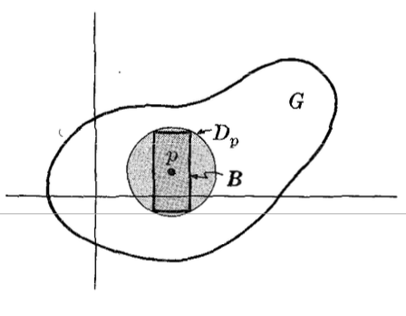
Example 1.3: 임의의 이산공간 \((X, \mathcal{D})\)를 생각하자. 그러면 \(X\)의 모든 한원소 부분집합들의 족 \(\mathcal{B} = \{\{p\} : p \in X\}\)는 \(X\) 위의 이산 위상 \(\mathcal{D}\)에 대한 기저이다. 각 한원소집합 \(\{p\}\)는 \(\mathcal{D}\)-열린이고, 모든 \(A \subset X\)가 \(\mathcal{D}\)-열린이므로, 모든 집합은 한원소집합들의 합집합이다. 사실 \(X\)의 부분집합들의 임의의 다른 족 \(\mathcal{B}^*\)가 \(\mathcal{D}\)에 대한 기저인 것은 \(\mathcal{B}\)의 상위족(superclass)인 것, 즉 \(\mathcal{B}^* \supset \mathcal{B}\)인 것과 동치이다.
규빈: 결국에는 \({\cal B}\)가 최소기저의 느낌을 가진다는것.
이제 다음 질문을 던진다: 집합 \(X\)의 부분집합들의 족 \(\mathcal{B}\)가 주어졌을 때, \(\mathcal{B}\)가 \(X\) 위의 어떤 위상에 대한 기저가 되려면 언제인가? \(X\)는 \(X\) 위의 모든 위상에서 열린집합이므로 \(X = \bigcup\{B : B \in \mathcal{B}\}\)가 필요조건임은 분명하다. 다음 예시는 다른 조건들도 필요함을 보여준다.
Example 1.4: \(X = \{a, b, c\}\)라 하자. \(\{a,b\}\)와 \(\{b,c\}\)로 구성된 족 \(\mathcal{B} = \{\{a,b\}, \{b,c\}\}\)는 \(X\) 위의 어떤 위상에 대한 기저도 될 수 없음을 보인다. 만약 그렇다면 \(\{a,b\}\)와 \(\{b,c\}\)는 그 자체로 열린집합이 되고, 따라서 그 교집합 \(\{a,b\} \cap \{b,c\} = \{b\}\)도 열린집합이어야 한다; 그러나 \(\{b\}\)는 \(\mathcal{B}\)의 원소들의 합집합으로 표현될 수 없다.
Theorem 6.1: Let \(\mathcal{B}\) be a class of subsets of a non-empty set \(X\). Then \(\mathcal{B}\) is a base for some topology on \(X\) if and only if it possesses the following two properties: (i) \(X = \bigcup\{B : B \in \mathcal{B}\}\). (ii) For any \(B, B^* \in \mathcal{B}\), \(B \cap B^*\) is the union of members of \(\mathcal{B}\), or, equivalently, if \(p \in B \cap B^*\) then \(\exists B_p \in \mathcal{B}\) such that \(p \in B_p \subset B \cap B^*\).
규빈: 이것도 위상없이 기저를 정의하는 방식이네..
Example 1.5: \(\mathcal{B}\)를 실직선 \(\mathbf{R}\)에서 반열린-반닫힌 구간들의 족이라 하자:
\[\mathcal{B} = \{(a, b] : a, b \in \mathbf{R},\, a < b\}\]
모든 실수는 어떤 반열린-반닫힌 구간에 속하므로 \(\mathbf{R}\)은 \(\mathcal{B}\)의 원소들의 합집합임이 분명하다. 또한 임의의 두 반열린-반닫힌 구간의 교집합 \((a, b] \cap (c, d]\)는 공집합이거나 또 다른 반열린-반닫힌 구간이다. 예를 들어,
\[\text{if} \quad a < c < b < d \quad \text{then} \quad (a, b] \cap (c, d] = (c, b]\]
이는 아래 그림에서 보이는 바와 같다.
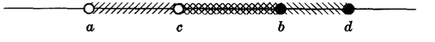
따라서 반열린-반닫힌 구간들의 합집합으로 이루어진 족 \(\mathcal{T}\)는 \(\mathbf{R}\) 위의 위상이다, 즉 \(\mathcal{B}\)는 \(\mathbf{R}\) 위의 위상 \(\mathcal{T}\)에 대한 기저이다. 이 위상 \(\mathcal{T}\)를 상극한 위상(upper limit topology)이라 부른다. \(\mathcal{T} \neq \mathcal{U}\)임을 관찰하라.
규빈: 그렇지만 \(\sigma({\cal T}) = \sigma({\cal U})\) 임.. 측도론에서 배웠지
마찬가지로, 닫힌-반열린 구간들의 족
\[\mathcal{B}^* = \{[a, b) : a, b \in \mathbf{R},\, a < b\}\]
은 \(\mathbf{R}\) 위의 위상 \(\mathcal{T}^*\)에 대한 기저이며, 이를 하극한 위상(lower limit topology)이라 부른다.
SUBBASES
\((X, \mathcal{T})\)를 위상공간이라 하자. \(X\)의 열린 부분집합들의 족 \(\mathcal{S}\), 즉 \(\mathcal{S} \subset \mathcal{T}\)가 위상 \(\mathcal{T}\)에 대한 부분기저(subbase)라 함은, \(\mathcal{S}\)의 원소들의 유한 교집합들이 \(\mathcal{T}\)에 대한 기저를 이루는 것이다.
규빈: \({\cal S}\)는 여러개의 친목모임(=여유있는 집합)을 가지고 있다. 그런데 때때로 \({\cal S}\)의 친목모임은 너무 덩치가 커서 \({\cal T}\)에 대한 블록역할을 하기에는 충분치 않다. 그러나 \({\cal S}\)의 친목모임을 진짜 친한 원소들끼리만 남도록 더욱 잘게 쪼갠뒤 (=유한번 교집합하여) 무한합집하여 친목모임 \({\cal B}\)로 만든다면, 이 \({\cal B}\)는 \({\cal T}\)의 base라는 내용.
Example 2.1: 직선 \(\mathbf{R}\)에서 모든 열린구간 \((a, b)\)는 두 무한 열린구간 \((a, \infty)\)와 \((-\infty, b)\)의 교집합임을 관찰하라: \((a, b) = (a, \infty) \cap (-\infty, b)\). 그런데 열린구간들은 \(\mathbf{R}\) 위의 보통 위상에 대한 기저를 이룬다; 따라서 모든 무한 열린구간들의 족 \(\mathcal{S}\)는 \(\mathbf{R}\)에 대한 부분기저이다.
규빈: 부분기저가 기저는 아님. 그러나 적당히 유한교집합하여 기저를 만들 수는 있어.
Example 2.2: 평면 \(\mathbf{R}^2\)에서 수직 무한 열린 띠와 수평 무한 열린 띠의 교집합은 아래 그림에서 보이는 바와 같이 열린 직사각형이다.
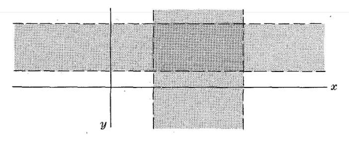
그런데 앞서 언급한 바와 같이, 열린 직사각형들은 \(\mathbf{R}^2\) 위의 보통 위상에 대한 기저를 이룬다. 따라서 모든 무한 열린 띠들의 족 \(\mathcal{S}\)는 \(\mathbf{R}^2\)에 대한 부분기저이다.
TOPOLOGIES GENERATED BY CLASSES OF SETS
\(\mathcal{A}\)를 공집합이 아닌 집합 \(X\)의 부분집합들의 임의의 족이라 하자. 앞서 보았듯이, \(\mathcal{A}\)는 \(X\) 위의 위상에 대한 기저가 되지 못할 수도 있다. 그러나 \(\mathcal{A}\)는 항상 다음의 의미에서 \(X\) 위의 위상을 생성(generate)한다:
Theorem 6.2: Any class \(\mathcal{A}\) of subsets of a non-empty set \(X\) is the subbase for a unique topology \(\mathcal{T}\) on \(X\). That is, finite intersections of members of \(\mathcal{A}\) form a base for the topology \(\mathcal{T}\) on \(X\).
규빈: \(X\)의 임의의 부분집합들의 모임 \({\cal A}\)는 항상 어떠한 위상인지는 모르겠지만 어떤 위상의 sub-base역할을 할 수 있다. 왜냐하면 이론 6.2에 의하여 \({\cal A}\)의 원소들을 유한번교집합하여 더 작은 친목모임들의 집합으로 만들고, 그걸 무한합집합하여 원소를 추가하면 그것이 기저역할을 하기때문이다.
Example 3.1: \(X = \{a, b, c, d\}\)의 다음 부분집합들의 족을 생각하자:
\[\mathcal{A} = \{\{a,b\}, \{b,c\}, \{d\}\}\]
\(\mathcal{A}\)의 원소들의 유한 교집합을 취하면 다음 족을 얻는다
\[\mathcal{B} = \{\{a,b\}, \{b,c\}, \{d\}, \{b\}, \varnothing, X\}\]
(\(X \in \mathcal{B}\)임에 주의하라, 이는 정의에 의해 \(\mathcal{A}\)의 원소들의 공교집합(empty intersection)이기 때문이다.) \(\mathcal{B}\)의 원소들의 합집합을 취하면 다음 족을 얻는다
\[\mathcal{T} = \{\{a,b\}, \{b,c\}, \{d\}, \{b\}, \varnothing, X, \{a,b,d\}, \{b,c,d\}, \{b,d\}, \{a,b,c\}\}\]
이것이 족 \(\mathcal{A}\)에 의해 생성된 \(X\) 위의 위상이다.
Example 3.2: \((X, \precsim)\)를 공집합이 아닌 전순서집합이라 하자. 다음 형태의 \(X\)의 부분집합들에 의해
\[\{x \in X : x \prec p,\, p \in X\} \quad \text{or} \quad \{x \in X : p \prec x,\, p \in X\}\]
\(X\) 위에 생성되는 위상을 \(X\) 위의 순서 위상(order topology)이라 부른다. Example 2.1에 의해, \(\mathbf{R}\) 위의 보통 위상은 사실 \(\mathbf{R}\) 위의 (자연적인) 순서 위상과 동일함을 관찰하라.
규빈: \({x : x \prec p} = (-\infty, p)\)이고 \({x : p \prec x} = (p, \infty)\)인데, 이것들이 정확히 Example 2.1의 무한 열린구간들이고, 거기서 이미 이 족이 \(\mathbf{R}\) 위의 보통 위상의 부분기저임을 보였기 때문
집합들의 족에 의해 생성되는 위상은 다음과 같이도 특성화할 수 있다:
Proposition 6.3: Let \(\mathcal{A}\) be a class of subsets of a non-empty set \(X\). Then the topology \(\mathcal{T}\) on \(X\) generated by \(\mathcal{A}\) is the intersection of all topologies on \(X\) which contain \(\mathcal{A}\).
규빈: \({\cal A}\)에 의하여 생성된 위상은 \({\cal A}\)를 포함하는 위상 중 가장 작은 위상이다.
LOCAL BASES
\(p\)를 위상공간 \(X\)에서 임의의 점이라 하자. \(p\)를 포함하는 열린집합들의 족 \(\mathcal{B}_p\)가 \(p\)에서의 국소 기저(local base)라 함은, \(p\)를 포함하는 각 열린집합 \(G\)에 대해 \(p \in G_p \subset G\)인 \(G_p \in \mathcal{B}_p\)가 존재하는 것이다.
규빈: 기저를 정의함에 있어서, \({\cal T}\)의 기저를 정의하는 두번째 방법이
- \({\cal T}\)에서 임의의 열린집합 \(G\)를 선택
- \(G\)에서 임의의 점 \(p\)를 선택
- 어떠한 1,2의 선택에서도 항상 \(p\in B \subset G\)를 만족하는 적당한 \(B \in {\cal B}\)가 존재한다면 \({\cal B}\)가 base라는
논리였음. 그런데 local-base는 이런느낌임
- \(X\)의 원소 \(p\)를 하나 선택함.
- \(p\)를 포함하는 열린 열린집합 \(G\)를 임의로 선택함.
- 어떠한 1,2의 선택에서도 \(p \in B_p \subset G\) 가 성립하도록 하는 “열린집합” \(B_p \in {\cal B}_p\) 가 존재한다면 \({\cal B}_p\)를 local-bases라고 한다.
Example 4.1: 평면 \(\mathbf{R}^2\) 위의 보통 위상과 임의의 점 \(p \in \mathbf{R}^2\)을 생각하자. 그러면 \(p\)를 중심으로 하는 모든 열린 원판의 모음 \(\mathcal{B}_p\)는 \(p\)에서의 국소 기저이다. 왜냐하면, 이전에 증명한 바와 같이, \(p\)를 포함하는 임의의 열린 집합 \(G\)는 중심이 \(p\)인 열린 원판 \(D_p\)를 포함하기 때문이다.
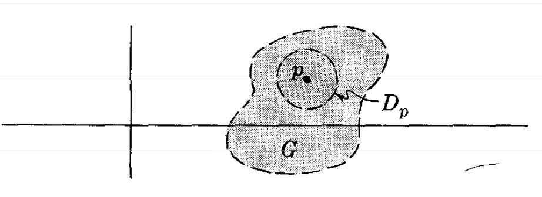
마찬가지로, 중심이 \(a \in \mathbf{R}\)인 모든 열린 구간 \((a - \delta, \, a + \delta)\)의 모음은 직선 \(\mathbf{R}\) 위의 점 \(a\)에서의 국소 기저이다.
규빈: 아래의 표를 관찰하자.
| base \(\mathcal{B}\) | subbase \(\mathcal{S}\) | local base \(\mathcal{B}_p\) | |
|---|---|---|---|
| 범위 | 위상 전체 | 위상 전체 | 한 점 \(p\) 주변 |
| 원소 | 열린 집합 (\(\mathcal{B} \subset \mathcal{T}\)) | 열린 집합 (\(\mathcal{S} \subset \mathcal{T}\)) | \(p\)를 포함하는 열린 집합 (\(\mathcal{B}_p \subset \mathcal{T}\)) |
| 핵심 성질 | \(\mathcal{B}\)의 원소들을 임의 합집합하면 모든 \(\mathcal{T}\)-열린집합을 구성할 수 있음 | \(\mathcal{S}\)의 원소들을 유한 교집합하여 원소를 추가하여 \(\bar{\mathcal{S}}\)를 만든 뒤 그것을 임의 합집합하면 모든 \(\mathcal{T}\)-열린집합을 구성할 수 있음 | 점 \(p\)를 포함하는 \(\mathcal{T}\)-열린집합을 재구성할 수 있는 건 아님. 그렇지만 \(p\)를 포함하는 매우 작은 열린집합이라도, 그것보다 더 작은 열린집합을 항상 포함하고 있어 “\(p\)에서 어떤 일이 벌어지느냐?”에 더 초점을 맞출 수 있음 |
| 대표 예시 | \(\mathbb{R}\): 열린 구간 \((a,b)\) 전체 | \(\mathbb{R}\): \(\{(-\infty, a)\} \cup \{(b, \infty)\}\) | \(\mathbb{R}\)에서 점 \(p\): \((p-\delta, p+\delta)\)들의 모임 |
규빈: 내 생각엔 base와 subbase는 전체 열린집합을 “설명”하려는 의도가 강한 반면, local base는 한점 \(p\)에서의 행동을 살펴보려는 의도가 강한것 같음. 또한 local base는 거리의 개념과도 밀접한 관련이 있음.
위상에 대한 기저(“큰 의미에서”)와 한 점에서의 국소 기저(“작은 의미에서”) 사이에는 다음과 같은 관계가 명백히 성립한다:
Proposition 6.4: Let \(\mathcal{B}\) be a base for a topology \(\mathcal{T}\) on \(X\) and let \(p \in X\). Then the members of the base \(\mathcal{B}\) which contain \(p\) form a local base at the point \(p\).
규빈: 그러니까 \({\cal B}\)에서 점 \(p\)를 포함하는 열린집합만을 뽑은게 \({\cal B}_p\)네?
이전에 점 \(p\)를 포함하는 열린 집합의 관점에서 정의된 일부 개념들은 점 \(p\)에서의 국소 기저의 원소들만으로도 정의할 수 있다. 예를 들어,
Proposition 6.5: A point \(p\) in a topological space \(X\) is an accumulation point of \(A \subset X\) iff each member of some local base \(\mathcal{B}_p\) at \(p\) contains a point of \(A\) different from \(p\).
Proposition 6.6: A sequence \(\langle a_1, a_2, \ldots \rangle\) of points in a topological space \(X\) converges to \(p \in X\) iff each member of some local base \(\mathcal{B}_p\) at \(p\) contains almost all of the terms of the sequence.
앞의 세 명제로부터 다음의 유용한 따름정리가 성립한다.
Corollary 6.7: Let \(\mathcal{B}\) be a base for a topology \(\mathcal{T}\) on \(X\). Then: (i) \(p \in X\) is an accumulation point of \(A \subset X\) iff each open base set \(B \in \mathcal{B}\) containing \(p\) contains a point of \(A\) different from \(p\); (ii) a sequence \(\langle a_1, a_2, \ldots \rangle\) of points in \(X\) converges to \(p \in X\) iff each open base set \(B \in \mathcal{B}\) containing \(p\) contains almost all of the terms of the sequence.
Example 4.2: 실수직선 \(\mathbf{R}\) 위의 하한 위상(lower limit topology) \(\mathcal{T}\)는 반닫힌-열린 구간 \([a, b)\)의 모임을 기저로 가진다. \(A = (0, 1)\)이라 하자. \(G = [1, 2)\)는 \(1\)을 포함하는 \(\mathcal{T}\)-열린 집합인데 \(G \cap A = \varnothing\)임에 주목하라. 따라서 \(1\)은 \(A\)의 극한점이 아니다. 반면에, \(0 \in \mathbf{R}\)은 \(A\)의 극한점이다. 왜냐하면 \(0\)을 포함하는 임의의 열린 기저 집합 \([a, b)\), 즉 \(a \leq 0 < b\)인 것은 \(0\)이 아닌 \(A\)의 점을 포함하기 때문이다.
Chap 7. Continuity and Topological Equivalence
CONTINUOUS FUNCTIONS
\((X, \mathcal{T})\)와 \((Y, \mathcal{T}^*)\)를 위상공간이라 하자. \(X\)에서 \(Y\)로의 함수 \(f\)가 \(\mathcal{T}\)와 \(\mathcal{T}^*\)에 대해 연속(continuous relative to \(\mathcal{T}\) and \(\mathcal{T}^*\)), 또는 \(\mathcal{T}\)-\(\mathcal{T}^*\) 연속, 또는 간단히 연속이라 함은, \(Y\)의 모든 \(\mathcal{T}^*\)-열린 부분집합 \(H\)의 역상 \(f^{-1}[H]\)가 \(X\)의 \(\mathcal{T}\)-열린 부분집합이 되는 것을 말한다. 즉,
\[H \in \mathcal{T}^* \quad \text{implies} \quad f^{-1}[H] \in \mathcal{T}\]
관련된 위상을 나타내는 것이 편리할 때 \(X\)에서 \(Y\)로의 함수를 \(f : (X, \mathcal{T}) \to (Y, \mathcal{T}^*)\)로 쓸 것이다.
Example 1.1: \(X = \{a, b, c, d\}\)와 \(Y = \{x, y, z, w\}\) 위의 다음 위상을 생각하자:
\[\mathcal{T} = \{X, \varnothing, \{a\}, \{a,b\}, \{a,b,c\}\}, \quad \mathcal{T}^* = \{Y, \varnothing, \{x\}, \{y\}, \{x,y\}, \{y,z,w\}\}\]
또한 아래 다이어그램으로 정의되는 함수 \(f: X \to Y\)와 \(g: X \to Y\)를 생각하자:
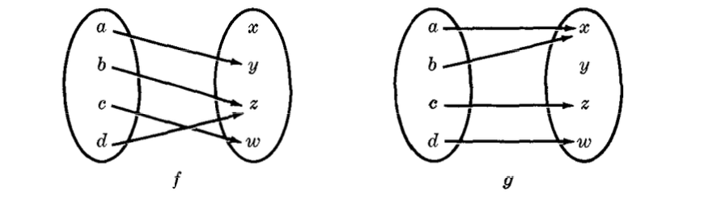
함수 \(f\)는 연속이다. \(Y\) 위의 위상 \(\mathcal{T}^*\)의 각 원소의 역상이 \(X\) 위의 위상 \(\mathcal{T}\)의 원소이기 때문이다. 함수 \(g\)는 연속이 아니다. \(\{y, z, w\} \in \mathcal{T}^*\), 즉 \(Y\)의 열린 부분집합이지만, 그 역상 \(g^{-1}[\{y, z, w\}] = \{c, d\}\)는 \(X\)의 열린 부분집합이 아니기 때문이다. 즉 \(\mathcal{T}\)에 속하지 않는다.
Example 1.2: 임의의 이산 공간 \((X, \mathcal{D})\)와 임의의 위상 공간 \((Y, \mathcal{T})\)를 생각하자. 그러면 모든 함수 \(f: X \to Y\)는 \(\mathcal{D}\)-\(\mathcal{T}\) 연속이다. 왜냐하면 \(H\)가 \(Y\)의 임의의 열린 부분집합이면, 그 역상 \(f^{-1}[H]\)는 \(X\)의 열린 부분집합이기 때문이다. 이산 공간에서는 모든 부분집합이 열린 집합이기 때문이다.
Example 1.3: \(X\)와 \(Y\)가 위상 공간이고 \(f: X \to Y\)라 하자. \(\mathcal{B}\)를 \(Y\) 위의 위상에 대한 기저라 하자. 각 원소 \(B \in \mathcal{B}\)에 대해 \(f^{-1}[B]\)가 \(X\)의 열린 부분집합이라고 가정하면, \(f\)는 연속함수이다. \(H\)를 \(Y\)의 열린 부분집합이라 하면, \(H = \cup_i B_i\), 즉 \(\mathcal{B}\)의 원소들의 합집합이다. 그런데
\[f^{-1}[H] = f^{-1}[\cup_i B_i] = \cup_i f^{-1}[B_i]\]
이고 각 \(f^{-1}[B_i]\)는 가정에 의해 열린 집합이다. 따라서 \(f^{-1}[H]\)는 열린 집합들의 합집합이므로 열린 집합이다. 그러므로 \(f\)는 연속이다.
앞의 예제의 결과를 형식적으로 진술하자.
Proposition 7.1: A function \(f: X \to Y\) is continuous iff the inverse of each member of a base \(\mathcal{B}\) for \(Y\) is an open subset of \(X\).
이 명제는 사실 다음과 같이 강화될 수 있다:
Theorem 7.2: Let \(\mathcal{S}\) be a subbase for a topological space \(Y\). Then a function \(f: X \to Y\) is continuous iff the inverse of each member of \(\mathcal{S}\) is an open subset of \(X\).
Example 1.4: 평면 \(\mathbf{R}^2\)에서 직선 \(\mathbf{R}\)으로의 사영 사상들은 보통 위상에 대해 모두 연속이다. 예를 들어, \(\pi(\langle x, y \rangle) = y\)로 정의되는 사영 \(\pi: \mathbf{R}^2 \to \mathbf{R}\)을 생각하자. 그러면 임의의 열린 구간 \((a, b)\)의 역상은 아래에 그려진 것과 같은 무한 열린 띠(strip)이다:
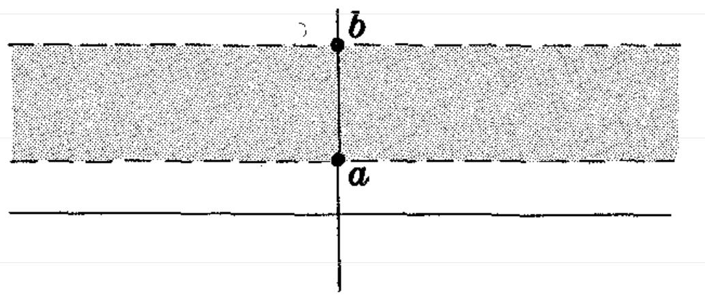
<\(\pi^{-1}[(a, b)]\) is shaded>따라서 Proposition 7.1에 의해, \(\mathbf{R}\)의 모든 열린 부분집합의 역상은 \(\mathbf{R}^2\)에서 열린 집합이다. 즉 \(\pi\)는 연속이다.
Example 1.5: \(\mathbf{R}\) 위의 절댓값 함수 \(f\), 즉 \(x \in \mathbf{R}\)에 대해 \(f(x) = |x|\)는 연속이다. \(A = (a, b)\)가 \(\mathbf{R}\)의 열린 구간이면,
\[f^{-1}[A] = \begin{cases} \varnothing & \text{if } a < b \leq 0 \\ (-b, b) & \text{if } a < 0 < b \\ (-b, -a) \cup (a, b) & \text{if } 0 \leq a < b \end{cases}\]
아래 그림에서 보는 바와 같다. 각 경우에 \(f^{-1}[A]\)는 열린 집합이다. 따라서 \(f\)는 연속이다.
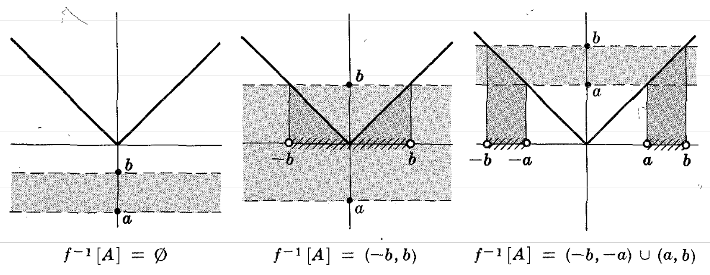
연속 함수는 닫힌 집합에 대한 행동으로도 특성화할 수 있다. 다음과 같다:
Theorem 7.3: A function \(f: X \to Y\) is continuous if and only if the inverse image of every closed subset of \(Y\) is a closed subset of \(X\).
규빈: 연속함수는 원래 이어진 느낌이잖아? 근데 그 이어진 느낌의 함수를 “열린집합을 열린집합으로 보내고 닫힌집합을 닫힌집합으로 보내는 함수” 라고 다시 정의한 것임. (여기서 살짝 논리적 점프가 있음) 이것은 “가까움”을 보존하는 함수라는 의미임.
CONTINUOUS FUNCTIONS AND ARBITRARY CLOSENESS
\(X\)를 위상 공간이라 하자. 점 \(p \in X\)가 집합 \(A \subset X\)에 임의로 가깝다(arbitrarily close)고 말하는 것은
either (i) \(p \in A\) or (ii) \(p\) is an accumulation point of \(A\)
일 때이다.
\(\bar{A} = A \cup A'\)임을 상기하라. 따라서 \(A\)의 폐포는 \(X\)에서 \(A\)에 임의로 가까운 점들로 정확히 구성된다. 또한 \(\bar{A} = A^\circ \cup \mathrm{b}(A)\)임을 상기하라. 따라서 \(p\)가 \(A\)의 내점이거나 경계점이면 \(p\)는 \(A\)에 임의로 가깝다.
연속 함수는 임의적 가까움(arbitrary closeness)을 보존하는 함수로도 특성화할 수 있다. 즉,
Theorem 7.4: A function \(f: X \to Y\) is continuous if and only if, for any \(p \in X\) and any \(A \subset X\),
\(p\) arbitrarily close to \(A\) \(\Rightarrow\) \(f(p)\) arbitrarily close to \(f[A]\)
or
\(p \in \bar{A}\) \(\Rightarrow\) \(f(p) \in \overline{f[A]}\)
or
\(f[\bar{A}] \subset \overline{f[A]}\)
규빈: 이거 사실 위의 3개가 모두 같은말임. 왜냐하면 “\(p\) arbitrarily close to \(A\)” 이게 의미하는게 결국 \(p \in \bar{A}\) 이기 때문이다. 세번째는 두번째를 집합버전으로 다시 쓴 것이다. 이 정리에서 말하는것은 연속함수는 가까운점을 멀리 떨어뜨리지 않는 함수라는 점이다.
CONTINUITY AT A POINT
지금까지 정의한 연속성은 전체적(global) 성질이다. 즉, 함수가 전체 집합 \(X\) 위에서 어떻게 행동하는지를 제한한다. 이에 대응하는 국소적 개념으로 한 점에서의 연속성(continuity at a point)이 존재한다.
함수 \(f: X \to Y\)가 \(p \in X\)에서 연속이라 함은, \(f(p)\)를 포함하는 모든 열린 집합 \(H \subset Y\)에 대해 그 역상 \(f^{-1}[H]\)가 \(p\)를 포함하는 어떤 열린 집합 \(G \subset X\)의 상위집합이 되는 것이다. 동치적으로, \(f(p)\)의 모든 근방의 역상이 \(p\)의 근방이 되는 것이다. 즉,
\[N \in \mathcal{N}_{f(p)} \Rightarrow f^{-1}[N] \in \mathcal{N}_p\]
실수직선 \(\mathbf{R}\)의 보통 위상에 대해, 이 정의는 함수 \(f: \mathbf{R} \to \mathbf{R}\)에 대한 \(\epsilon - \delta\) 정의와 일치함에 주목하라. 사실, 함수 \(f: \mathbf{R} \to \mathbf{R}\)에 대한 국소적 연속성과 전체적 연속성 사이의 관계는 일반적으로도 성립한다. 즉,
Theorem 7.5: Let \(X\) and \(Y\) be topological spaces. Then a function \(f: X \to Y\) is continuous if and only if it is continuous at every point of \(X\).
SEQUENTIAL CONTINUITY AT A POINT
함수 \(f: X \to Y\)가 점 \(p \in X\)에서 점렬 연속(sequentially continuous)이라 함은, \(X\)에서 \(p\)로 수렴하는 모든 수열 \(\langle a_n \rangle\)에 대해 \(Y\)에서의 수열 \(\langle f(a_n) \rangle\)이 \(f(p)\)로 수렴하는 것이다. 즉,
\[a_n \to p \quad \text{implies} \quad f(a_n) \to f(p)\]
점렬 연속과 한 점에서의 연속은 다음과 같이 관련된다:
Proposition 7.6: If a function \(f: X \to Y\) is continuous at \(p \in X\), then it is sequentially continuous at \(p\).
Remark: 앞 명제의 역은 성립하지 않는다. 예를 들어, 실수직선 \(\mathbf{R}\) 위의 위상 \(\mathcal{T}\)가 \(\varnothing\)과 가산 집합의 여집합들로 구성된 것을 생각하자. 수열 \(\langle a_n \rangle\)이 \(p\)로 수렴할 필요충분조건은 다음과 같은 형태를 가지는 것임을 상기하라 (Chapter 5의 Example 7.3 참고):
\[\langle a_1, a_2, \ldots, a_{n_0}, p, p, p, \ldots \rangle\]
그러면 임의의 함수 \(f: (\mathbf{R}, \mathcal{T}) \to (X, \mathcal{T}^*)\)에 대해,
\[\langle f(a_n) \rangle = \langle f(a_1), \ldots, f(a_{n_0}), f(p), f(p), f(p), \ldots \rangle\]
은 \(f(p)\)로 수렴한다. 즉, \((\mathbf{R}, \mathcal{T})\) 위의 모든 함수는 점렬 연속이다. 반면에, \(f(x) = x\)로 정의되는 함수 \(f: (\mathbf{R}, \mathcal{T}) \to (\mathbf{R}, \mathcal{U})\), 즉 항등함수는 \(\mathcal{T}\)-\(\mathcal{U}\) 연속이 아니다. \(f^{-1}[(0,1)] = (0,1)\)이 \(\mathbf{R}\)의 \(\mathcal{T}\)-열린 부분집합이 아니기 때문이다.
OPEN AND CLOSED FUNCTIONS
연속함수는 모든 열린집합의 역상이 열린집합이고, 모든 닫힌집합의 역상이 닫힌집합이라는 성질을 갖는다. 그러면 자연스럽게 다음과 같은 유형의 함수들에 대해 질문할 수 있다:
A function \(f: X \to Y\) is called an open (or interior) function if the image of every open set is open.
A function \(g: X \to Y\) is called a closed function if the image of every closed set is closed.
일반적으로, 열린 함수가 반드시 닫힌 함수일 필요는 없으며, 그 역도 마찬가지이다. 사실, 우리의 첫 번째 예시에서의 함수는 열린 함수이고 연속이지만 닫힌 함수는 아니다.
Example 2.1: 평면 \(\mathbf{R}^2\)에서 \(x\)-축으로의 사영 \(\pi: \mathbf{R}^2 \to \mathbf{R}\), 즉 \(\pi((x,y)) = x\)를 생각하자. 임의의 열린 원판 \(D \subset \mathbf{R}^2\)의 사영 \(\pi[D]\)는 열린 구간임을 관찰하라. 따라서 열린집합 \(G \subset \mathbf{R}^2\)의 상 \(\pi[G]\) 안의 임의의 점 \(\pi(p)\)는 \(\pi[G]\)에 포함된 어떤 열린 구간에 속하므로, \(\pi[G]\)는 열린집합이다. 따라서 \(\pi\)는 열린 함수이다. 반면에, \(\pi\)는 닫힌 함수가 아닌데, 집합 \(A = \{(x,y) : xy \geq 1, \, x > 0\}\)는 닫힌집합이지만 그 사영 \(\pi[A] = (0, \infty)\)는 닫힌집합이 아니기 때문이다. (아래 그림을 참조하라.)
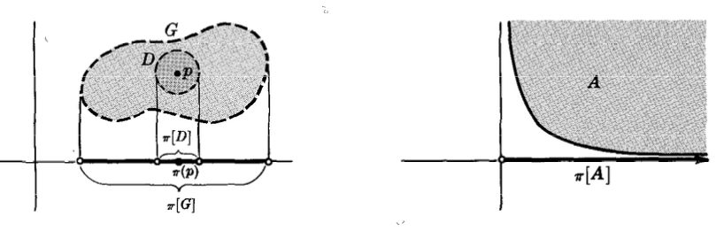
규빈: 이런거 정리해보자
| 조합 | 연속 | 열린 | 닫힌 | 예시 |
|---|---|---|---|---|
| 1 | O | O | O | \(f(x)=x\) |
| 2 | O | O | X | \(f(x)=e^x\) |
| 3 | O | X | O | \(f(x)=0\) |
| 4 | O | X | X | \(f(x) = \sin x\) |
| 5 | X | O | O | \((\mathbf{R},{\cal U}) \to (\mathbf{R},{\cal U})\) 에서는 상상하기 어려움 |
| 6 | X | O | X | \((\mathbf{R},{\cal U}) \to (\mathbf{R},{\cal U})\) 에서는 상상하기 어려움 |
| 7 | X | X | O | \(f(x)=[x]\) |
| 8 | X | X | X | \(f(x)=\begin{cases} 1 & x\leq 0 \\ x & x>0 \end{cases}\) |
HOMEOMORPHIC SPACES
위상공간 \((X, \mathcal{T})\)는, 우리가 보았듯이, 집합 \(X\)와 \(X\)의 부분집합들로 이루어진 특별한 모임 \(\mathcal{T}\)가 특정 공리들을 만족하는 것이다. 임의의 두 위상공간 \((X, \mathcal{T})\)와 \((Y, \mathcal{T}^*)\) 사이에는 많은 함수 \(f: X \to Y\)가 존재한다. 우리가 임의의 함수가 아니라 연속함수, 열린 함수, 또는 닫힌 함수를 논의하는 이유는, 이러한 함수들이 공간 \((X, \mathcal{T})\)와 \((Y, \mathcal{T}^*)\)의 구조의 어떤 측면을 보존하기 때문이다.
이제 어떤 전단사(즉, 일대일이고 위로의) 사상 \(f: X \to Y\)가 존재한다고 가정하자. 그러면 \(f\)는 \(X\)의 멱집합, 즉 \(X\)의 부분집합들의 모임으로부터 \(Y\)의 멱집합으로의 전단사 함수 \(f: \mathcal{P}(X) \to \mathcal{P}(Y)\)를 유도한다. 만약 이 유도된 함수가 \(\mathcal{T}\)를 \(\mathcal{T}^*\) 위로 보낸다면, 즉 \(X\)의 열린집합들과 \(Y\)의 열린집합들 사이의 일대일 대응을 정의한다면, 공간 \((X, \mathcal{T})\)와 \((Y, \mathcal{T}^*)\)는 위상적 관점에서 동일하다. 구체적으로:
규빈: \(f\)가 \(X\)의 열린집합과 \(Y\)의 열린집합들 사이에 일대일을 정의한다는 의미는 \(f\)와 \(f^{-1}\)이 모두 연속이라는 의미임. 다시 말하면 위의 의미는 아래와 같음.
- 함수 \(f: X\to Y\) 가 전단사라면 자연스럽게 이 함수 \(f\)는 \(X\)의 임의의 부분집합 \(A\)를 \(Y\)의 임의의 부분집합 \(B\)로 맵핑하는 새로운 set-function을 유도한다. (편의상 이 교재에서는 이러한 집합함수를 동일한 이름 \(f\)를 쓰고 기호로는 \(f[A]=B\) 이런식으로 표현하는듯)
- \(A \in {\cal P}(X)\) 는 열린집합일수도 아닐수도있다. 마찬가지로 \(B \in {\cal P}(Y)\) 역시 그러하다. 함수 \(f\)가 열린집합은 열린집합끼리만 연결한다면 (따라서 자동으로 닫힌집합은 닫힌집합 끼리만 연결됨 그리고 열리지도 닫히지도 않은 집합은 열리지도 닫히지도 않은 집합으로 연결됨) 그 함수\(f\)는 공간 \((X, \mathcal{T})\)와 \((Y,\mathcal{T}^*)\)를 위상적관점에서 동일하게 만드는 함수이다.
Definition: Two topological spaces \(X\) and \(Y\) are called homeomorphic or topologically equivalent if there exists a bijective (i.e. one-one, onto) function \(f: X \to Y\) such that \(f\) and \(f^{-1}\) are continuous. The function \(f\) is called a homeomorphism.
규빈: \(f\)가 전단사함수면 \(f^{-1}\)이 존재함. 그리고 \(f^{-1}\)이 연속이라는 것은 \(f\)가 열린함수이고 동시에 닫힌함수라는 의미임. 따라서 호미어모픽한 공간을 만들어내는 호미어모피즘 함수 \(f\)는 (1) 전단사 (2) 열림 (3) 닫힘 (4) 연속 (5) 역함수도 연속 이라는 매우 좋은 성질을 가짐. 참고로 그 유명한 “도넛과 머그컵이 같다” 에 나오는 그 함수 \(f\)가 호미어모피즘임.
함수 \(f\)가 열린 함수이면서 연속이면 bicontinuous 또는 topological이라 부른다. 따라서 \(f: X \to Y\)가 동형사상이 될 필요충분조건은 \(f\)가 bicontinuous이고 전단사인 것이다.
규빈: \(f\)가 열린함수이고 연속이면 “열린집합은 열린집합끼리 연결하는 함수”라는 의미이다. 하지만 이 함수가 곧장 호미오모피즘을 의미하는건 아니다. 왜냐하면 서로다른 열린집합을 하나의 열린집합으로 맵핑하는 경우도 있기 때문이다. 예를들어 두 공간 \((X,{\cal T}_X)\) 와 \((Y,{\cal T}_Y)\) 이 있다고 하자. 어떠한 함수 \(f\)가 \({\cal T}_X\)의 모든 원소를 \({\cal T}_Y\)의 어떤 원소 \(B\)에 맵핑한다고 하자. 즉 \(\forall A \in {\cal T}_X: f[A] = B\) 이다. 이럴경우 \(f\)는 열린함수이면서 (\(f^{-1}\)이 연속이면서) 연속인 함수이지만, \(f\)가 \({\cal T}_X\)의 모든 원소를 \({\cal T}_Y\)의 모든 원소에 일대응 대응시키는 것은 아니다. (그렇게 하려면 \(f\)가 자체가 전단사이어야함) 즉 정리하면 호메오모피즘은 “열린집합은 열린집합끼리 연결 + 그 연결이 1:1대응일것” 을 의미한다.
Example 3.1: \(X = (-1, 1)\)로 놓자. \(f(x) = \tan \frac{1}{2}\pi x\)로 정의된 함수 \(f: X \to \mathbf{R}\)는 일대일이고, 위로의 함수이며, 연속이다. 더 나아가, 역함수 \(f^{-1}\) 또한 연속이다. 따라서 실직선 \(\mathbf{R}\)과 열린구간 \((-1, 1)\)은 동형이다.
Example 3.2: \(X\)와 \(Y\)를 이산공간이라 하자. 그러면, Example 1.2에서 보았듯이, 한 공간에서 다른 공간으로의 모든 함수는 연속이다. 따라서 \(X\)와 \(Y\)가 동형일 필요충분조건은 한 공간에서 다른 공간으로의 일대일 대응 함수가 존재하는 것, 즉 두 집합의 기수가 같은 것이다.
Proposition 7.7: The relation in any collection of topological spaces defined by “\(X\) is homeomorphic to \(Y\)” is an equivalence relation.
따라서, 동치관계에 대한 기본 정리에 의해, 임의의 위상공간들의 모임은 위상적으로 동치인 공간들의 류(class)들로 분할될 수 있다.
규빈: 예를들어 1차원에서는
- 동치류1: 점하나(.)
- 동치류2: 끝점이 없는 열린구간 – 점하나를 빼면 동일한 두조각으로 쪼개짐
- 동치류3: 끝점이 있고 유한한 (Compactness) 구간 – \([0,1]\)에서 점하나를 빼도 연결된 한 덩어리 \((0,1]\) 이 나올수있음.
- .동치류4: Ray (\([a,b)\))
- …
이런식으로.. 그리고 더 나아가서 고차원에서는
- 동치류1: 원 (\(S^1\))
- 동치류2: 구면 (\(S^2\))
- 동치류3: 토러스, 즉 도넛 (\(T^2\))
- 동치류4: 구멍이 2개있는 도넛
- …
이런식으로도 가능.
규빈: \(\mathbb{R} \cong (0,1)\) 이지만 \(\mathbb{R} \not\cong [0,1]\) 임이 재미있다. 즉 열린집합/닫힌집합와 같은 식으로 동치류가 구분되지는 않는다는게 재미있다. 예를들어 \[(0,1), (-\infty,\infty), [0,1], (0,1], [0,\infty), (0,\infty)\]를 생각해보자. 어떻게 묶을 수 있을까? 사람마다 분류기준이 다를것이다. 어떤사람은 \((0,1), (0,\infty)\)를 비슷하다고 볼수있고 어떤사람은 \((0,\infty),(-\infty,\infty),[0,\infty)\) 이 비슷하다고 볼 수도있을 것이다. 이를 위해서 여러가지 위상분류기준을 적용 해보자.
- 컴팩트성질을 적용해보자. 이것은 “유한한 범위안에 꽉 차서 갇혀있는가?”를 따지는건데 \([0,1]\)만 해당된다.
- 끝점이 몇개 있는지를 따져보자. 개미가 기어가다가 더이상 갈 수 없는 낭떠러지를 만나는가? 만난다면 그 절벽은 몇군데인가? \([0,1]\)은 2개이고 \((0,1]\),\([0,\infty)\)는 1개임.
- 점빼기테스트를 해보자. 두 공간이 위상동형이면 한점을 뺏을때 벌어지는 일도 같아야한다. \((0,1)\)은 한점을 빼면 무조건 두 조각으로 쪼개진다. \([0,1]\)은 한점을 뺏을때 두 조각으로 쪼개지지 않을 수 있다. (예를들어 \([0,1]\)에서 \(\{1\}\)을 빼면 \([0,1)\)이 나옴) … 기타등등 수많은 위상분류기준이 있음.
규빈: 1차원은 이러한 위상분류기준을 적용하면 (1) Circle \(S^1\) (2) Line \(\mathbb{R} \cong (0,1)\) (3) Interval \([0,1]\) (4) Ray \([0,\infty) \cong [0,1)\) 으로 나눌수있다.
규빈: 위상분류기준도 다양해서 재미있다. 간단히 소개하면 아래와 같다.
- 연결성 패밀리 (Connectivity): 공간의 결합 상태가장 기초적인 직관으로, 공간이 몇 조각으로 나뉘어 있는지 혹은 어떻게 이어져 있는지를 묻는 개념이다. 연결성(Connectedness)은 공간이 두 개의 서로소인 열린 집합으로 쪼개질 수 없는 상태를 의미한다. 길 연결성(Path Connectedness)은 공간 안의 임의의 두 점을 잡았을 때, 그 사이를 잇는 실선(Path)을 그릴 수 있는지를 따진다. (참고로 ’위상수학자의 사인 곡선’처럼 연결되어 있으나 길은 그릴 수 없는 특수한 공간도 존재한다고함.) 단순 연결성(Simply Connectedness)은 구멍의 유무를 판단하는 기준으로, 공간 안에 고무줄(루프)을 던졌을 때 구멍에 걸리지 않고 한 점으로 수축될 수 있는지를 본다. 단절점(Cut Point)은 특정 점 하나를 제거했을 때 공간이 두 조각 이상으로 나뉘는지(비연결 상태가 되는지)를 확인하는 직관적인 판별법이다.
- 크기와 한계 패밀리 (Compactness): 공간의 범위와 유한성공간이 무한히 뻗어 나가는지, 아니면 유한한 범위 내에 갇혀 있는지를 다루는 개념임. 콤팩트성(Compactness)은 공간이 유한한 범위 안에 있고 닫혀 있어서, 탈출할 구멍이나 무한히 뻗는 방향이 없는 상태를 말함. (예: 닫힌 구간 \([0, 1]\)은 콤팩트하지만 실수선 \(\mathbb{R}\)은 콤팩트하지 않습니다.) 국소 콤팩트성(Local Compactness)은 전체 공간은 무한할지라도, 임의의 점 주변을 아주 작게 확대해보면 콤팩트한 성질을 가지는지를 묻는다. 파라콤팩트성(Paracompactness)은 더 심화된 개념으로, 주로 공간이 다양체(Manifold)가 되기 위해 갖추어야 할 필수적인 조건으로 사용된다.
- 해상도 패밀리 (Separation & Countability): 점들의 구별과 조밀함공간을 구성하는 점이나 집합들이 얼마나 촘촘하게 배치되어 있고, 서로 구별 가능한지를 측정한다. 하우스도르프(\(T_2\), Hausdorff) 성질은 서로 다른 두 점을 골랐을 때, 서로 겹치지 않는 열린 집합(방)으로 각각 격리시킬 수 있는지를 본다. 이 성질이 없으면 수열의 극한값이 2개가 되는 등 직관에 반하는 현상이 발생한다. 가분성(Separability)은 셀 수 있는 점들(예: 유리수)만으로 전체 공간을 꽉 채울(Dense) 수 있는지를 묻는 성질입니다. 제1 가산 / 제2 가산(First/Second Countable) 성질은 공간을 설명하는 기본 블록(기저)의 개수가 셀 수 있을 만큼 적은지, 즉 위상적 구조가 얼마나 단순하게 기술될 수 있는지를 나타낸다.
- 대수적 위상수학 패밀리 (Algebraic Topology): 구멍의 개수 계산공간의 모양을 구체적인 숫자나 대수적 구조로 변환하여, 구멍의 개수와 차원을 정밀하게 계산하는 도구이다. 오일러 지표(Euler Characteristic, \(\chi\))는 \(V(\text{점}) - E(\text{선}) + F(\text{면})\)의 공식으로 계산되며, 이 숫자 하나로 구(\(2\)), 도넛(\(0\)), 이중 도넛(\(-2\)) 등을 명확히 구별할 수 있다. 기본군(Fundamental Group, \(\pi_1\))은 공간에 존재하는 1차원 구멍(루프)의 구조를 대수적인 ’군(Group)’으로 표현한 것이다. 호몰로지/코호몰로지(Homology/Cohomology)는 1차원 구멍뿐만 아니라 2차원 구멍(비어있는 속), 3차원 구멍 등 \(n\)차원의 구멍 개수를 모조리 셀 수 있는 일반화된 도구이다. 베티 수(Betti Numbers)는 이를 수치화한 것으로 \(b_0\)는 연결된 덩어리의 개수, \(b_1\)은 터널의 개수, \(b_2\)는 빈 공간(Void)의 개수를 의미한다.
- 다양체 전용 패밀리 (Manifold Properties): 기하학적 형상다루는 공간이 ’다양체(Manifold)’일 때 추가적으로 확인할 수 있는 기하학적 특성들이다. 차원(Dimension)은 공간을 국소적으로 확대했을 때 개미에게 몇 차원 유클리드 공간(\(\mathbb{R}^n\))처럼 보이는지를 뜻하며, 차원이 다르면 위상동형이 될 수 없다. 가향성(Orientability)은 공간의 안과 밖, 혹은 앞과 뒤의 구분이 명확한지를 따진다. 구나 원기둥은 가향(Orientable)이지만, 뫼비우스의 띠나 클라인 병은 비가향(Non-orientable)이다.경계(Boundary, \(\partial M\))는 공간이 끝없이 이어지는지, 아니면 더 이상 갈 수 없는 끝자락(절벽)이 존재하는지를 나타내는 불변량이다.
TOPOLOGICAL PROPERTIES
집합의 성질 \(P\)는, 위상공간 \((X, \mathcal{T})\)가 \(P\)를 가질 때마다 \((X, \mathcal{T})\)에 동형사상인 모든 공간도 역시 \(P\)를 가지면, topological 또는 topological invariant라고 불린다.
Example 4.1: Example 3.1에서 보았듯이, 실수직선 \(\mathbf{R}\)은 열린구간 \(X = (-1, 1)\)에 동형사상이다. 따라서 length는 위상적 성질이 아닌데, \(X\)와 \(\mathbf{R}\)의 길이가 다르기 때문이다. 또한 boundedness도 위상적 성질이 아닌데, \(X\)는 유계이지만 \(\mathbf{R}\)은 그렇지 않기 때문이다.
Example 4.2: \(X\)를 양의 실수의 집합, 즉 \(X = (0, \infty)\)라 하자. \(f(x) = 1/x\)로 정의된 함수 \(f: X \to X\)는 \(X\)에서 \(X\)로의 동형사상이다. 수열
\[\langle a_n \rangle = (1, \tfrac{1}{2}, \tfrac{1}{3}, \ldots)\]
이 동형사상 하에서 수열
\[\langle f(a_n) \rangle = (1, 2, 3, \ldots)\]
에 대응됨을 관찰하라. 수열 \(\langle a_n \rangle\)은 코시 수열이지만, 수열 \(\langle f(a_n) \rangle\)은 그렇지 않다. 따라서 코시 수열이 되는 성질은 위상적이지 않다.
위상수학의 대부분은 compactness와 connectedness 같은 특정 위상적 성질들의 결과를 탐구하는 것이다. 사실, 형식적으로 위상수학은 위상적 불변량에 대한 연구이다. 다음 예제에서 connectedness가 정의되고, 이것이 위상적 성질임이 보여진다.
Example 4.3: 위상공간 \((X, \mathcal{T})\)가 disconnected라 함은 \(X\)가 두 개의 열린, 공집합이 아닌, 서로소인 부분집합의 합집합인 것이다. 즉,
\[X = G \cup H \quad \text{where} \quad G, H \in \mathcal{T},\ G \cap H = \varnothing \quad \text{but} \quad G, H \neq \varnothing\]
\(f: X \to Y\)가 동형사상이면 \(X = G \cup H\)일 필요충분조건은 \(Y = f[G] \cup f[H]\)이고, 따라서 \(Y\)가 disconnected일 필요충분조건은 \(X\)가 disconnected인 것이다.
공간 \((X, \mathcal{T})\)가 connected라 함은 disconnected가 아닌 것이다.
규빈: disconnected는 위상공간자체에 부여된 성질임. 따라서 예를들면 \((\mathbb{R}, {\cal U})\) 에서 집합 \(A=[1,2] \cup [3,4]\)가 disconnected 인지 connected인지 고민하는건 애초에 질문이 잘못된것임.
규빈: 이산공간은 disconnected, 비이산공간은 connected, 보통위상공간은 connected 임. 보통위상공간에서 \(X'=(-1, 0) \cup (0, 1)\)에 부분공간 위상을 부여하면, \(G = (-1,0)\)과 \(H = (0,1)\)이 둘 다 \(X'\)에서 열린집합이고, 서로소이며, 공이 아니므로 disconnected이다. 보통위상공간에서 임의의 구간 \((a,b), [a,b], [a,b), (a,b]\)에 부분위상공간을 부여하면 이는 모두 connected이다. 또한 \(\mathbb{Q}\)에 부분위상공간을 부여하면 disconnected이다.
TOPOLOGIES INDUCED BY FUNCTIONS
\(\{(Y_i, \mathcal{T}_i)\}\)를 위상공간들의 임의의 모임이라 하고, 각 \(Y_i\)에 대해 임의의 공이 아닌 집합 \(X\) 위에 정의된 함수 \(f_i: X \to Y_i\)가 주어졌다고 하자. 우리는 모든 함수 \(f_i\)가 연속이 되는 \(X\) 위의 위상들을 조사하고자 한다. \(f_i\)가 \(X\) 위의 어떤 위상에 대해 연속이려면, \(Y_i\)의 각 열린 부분집합의 역상이 \(X\)의 열린 부분집합이어야 함을 상기하자. 따라서 우리는 \(X\)의 부분집합들의 다음 클래스를 고려한다:
\[\mathcal{S} = \bigcup_i \{f_i^{-1}[H] : H \in \mathcal{T}_i\}\]
즉, \(\mathcal{S}\)는 모든 공간 \(Y_i\)의 각 열린 부분집합의 역상으로 이루어진다. \(\mathcal{S}\)에 의해 생성되는 \(X\) 위의 위상 \(\mathcal{T}\)를 함수 \(f_i\)에 의해 induced(또는 generated)된 위상이라 부른다. \(\mathcal{T}\)의 주요 성질들은 다음 정리에 나열되어 있다.
규빈: 여기에서 \(i\)는 countable일까? uncountable일까? 임의의 모임이라고 했으니까 uncountable같긴한데.. 잘 모르겠음.. (AI는 uncountable이라고함)
Theorem 7.8: (i) All the functions \(f_i\) are continuous relative to \(\mathcal{T}\).
\(\mathcal{T}\) is the intersection of all the topologies on \(X\) with respect to which the functions \(f_i\) are continuous.
\(\mathcal{T}\) is the smallest, i.e. coarsest, topology on \(X\) with respect to which the functions \(f_i\) are continuous.
\(\mathcal{S}\) is a subbase for the topology \(\mathcal{T}\).
\(\mathcal{S}\)를 함수 \(f_i\)에 의해 유도된 위상, 즉 모든 함수 \(f_i\)가 연속이 되는 \(X\) 위의 가장 약한(coarsest) 위상에 대한 defining subbase라 부르겠다.
Example 5.1: \(\pi_1\)과 \(\pi_2\)를 평면 \(\mathbf{R}^2\)에서 \(\mathbf{R}\)로의 사영이라 하자. 즉,
\[\pi_1(\langle x, y \rangle) = x \quad \text{and} \quad \pi_2(\langle x, y \rangle) = y\]
아래 그림에서 보이듯이, \(\mathbf{R}\)에서의 열린구간 \((a, b)\)의 역상은 \(\mathbf{R}^2\)에서의 무한 열린 띠(infinite open strip)임을 관찰하라.
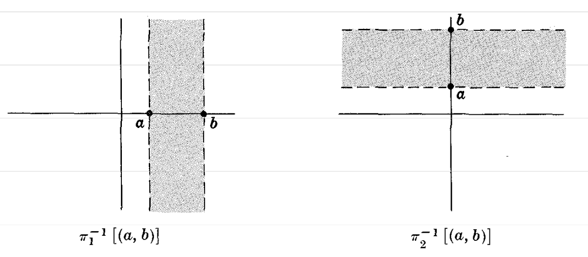
이러한 무한 열린 띠들이 \(\mathbf{R}^2\) 위의 보통위상에 대한 부분기저를 이룸을 상기하라. 따라서 \(\mathbf{R}^2\) 위의 보통위상은 사영 \(\pi_1\)과 \(\pi_2\)가 연속이 되는 \(\mathbf{R}^2\) 위의 가장 작은 위상이다.
Chap 8. Metric and Normed Spaces
METRICS
\(X\)를 공이 아닌 집합이라 하자. \(X \times X\), 즉 \(X\)의 원소들의 순서쌍 위에 정의된 실수값 함수 \(d\)가 \(X\) 위의 metric 또는 distance function이라 불리려면, 모든 \(a, b, c \in X\)에 대해 다음 공리들을 만족해야 한다:
- [\(\mathbf{M_1}\)] \(d(a, b) \geq 0\) and \(d(a, a) = 0\).
- [\(\mathbf{M_2}\)] (Symmetry) \(d(a, b) = d(b, a)\).
- [\(\mathbf{M_3}\)] (Triangle Inequality) \(d(a, c) \leq d(a, b) + d(b, c)\).
- [\(\mathbf{M_4}\)] If \(a \neq b\), then \(d(a, b) > 0\).
실수 \(d(a, b)\)를 \(a\)에서 \(b\)까지의 distance라 부른다.
[\(\mathbf{M_1}\)]은 임의의 점에서 다른 점까지의 거리가 절대 음수가 아니며, 한 점에서 자기 자신까지의 거리는 0임을 말한다. 공리 [\(\mathbf{M_2}\)]는 점 \(a\)에서 점 \(b\)까지의 거리가 \(b\)에서 \(a\)까지의 거리와 같음을 말한다; 따라서 우리는 \(a\)와 \(b\) 사이의(between) 거리라고 말한다.
[\(\mathbf{M_3}\)]이 Triangle Inequality라 불리는 이유는, \(a\), \(b\), \(c\)가 평면 \(\mathbf{R}^2\)의 점들일 때, [\(\mathbf{M_3}\)]이 삼각형의 한 변의 길이 \(d(a, c)\)가 나머지 두 변의 길이의 합 \(d(a, b) + d(b, c)\) 이하임을 말하기 때문이다. 마지막 공리 [\(\mathbf{M_4}\)]는 서로 다른 두 점 사이의 거리가 양수임을 말한다.
이제 거리함수의 몇 가지 예를 든다. 이들이 실제로 요구되는 공리들을 만족하는지는 나중에 검증될 것이다.
Example 1.1: \(a\)와 \(b\)가 실수일 때, \(d(a, b) = |a - b|\)로 정의된 함수 \(d\)는 실수직선 \(\mathbf{R}\) 위의 거리함수이며 usual metric이라 불린다. 나아가,
\[d(p, q) = \sqrt{(a_1 - b_1)^2 + (a_2 - b_2)^2}\]
로 정의된 함수 \(d\)는, \(p = (a_1, a_2)\)이고 \(q = (b_1, b_2)\)가 평면 \(\mathbf{R}^2\)의 점들일 때, 거리함수이며 \(\mathbf{R}^2\) 위의 usual metric이라 불린다. 별도의 언급이 없는 한, \(\mathbf{R}\)과 \(\mathbf{R}^2\) 위에서는 각각 이 거리함수를 가정한다.
Example 1.2: \(X\)를 임의의 공이 아닌 집합이라 하고, \(d\)를 다음과 같이 정의된 함수라 하자.
\[d(a, b) = \begin{cases} 0 & \text{if } a = b \\ 1 & \text{if } a \neq b \end{cases}\]
그러면 \(d\)는 \(X\) 위의 거리함수이다. 이 거리함수 \(d\)는 보통 \(X\) 위의 trivial metric이라 불린다.
Example 1.3: \(\mathcal{C}[0,1]\)을 닫힌 단위구간 \([0,1]\) 위의 연속함수들의 클래스라 하자. 클래스 \(\mathcal{C}[0,1]\) 위에 다음과 같이 거리함수가 정의된다:
\[d(f, g) = \int_0^1 |f(x) - g(x)|\, dx\]
여기서 \(d(f, g)\)는 정확히 아래 그림에 보이듯이 두 함수 사이에 놓인 영역의 넓이이다.
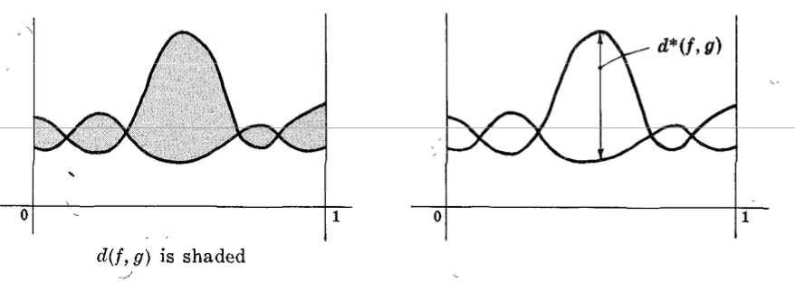
Example 1.4: 다시 \(\mathcal{C}[0,1]\)을 \([0,1]\) 위의 연속함수들의 모임이라 하자. \(\mathcal{C}[0,1]\) 위에 또 다른 거리함수가 다음과 같이 정의된다:\[d^*(f, g) = \sup\{|f(x) - g(x)| : x \in [0,1]\}\]
여기서 \(d^*(f, g)\)는 정확히 위에서 그림으로 보인 바와 같이 두 함수 사이의 최대 수직 간격이다.
Example 1.5: \(p = \langle a_1, a_2 \rangle\)와 \(q = \langle b_1, b_2 \rangle\)를 평면 \(\mathbf{R}^2\)의 임의의 점, 즉 실수의 순서쌍이라 하자. 다음과 같이 정의된 함수 \(d_1\)과 \(d_2\)는
\[d_1(p, q) = \max(|a_1 - b_1|,\, |a_2 - b_2|), \qquad d_2(p, q) = |a_1 - b_1| + |a_2 - b_2|\]
\(\mathbf{R}^2\) 위의 서로 다른 거리함수이다.
함수 \(\rho\)가 [M1], [M2] 그리고 [M3]를 만족하고, 즉 반드시 [M4]를 만족할 필요는 없을 때, 이를 pseudometric이라 한다. metric에 대한 많은 결과들은 pseudometric에 대해서도 역시 성립한다.
DISTANCE BETWEEN SETS, DIAMETERS
집합 \(X\) 위의 metric \(d\)가 주어졌다고 하자. 점 \(p \in X\)와 \(X\)의 공집합이 아닌 부분집합 \(A\) 사이의 distance는 다음과 같이 표시하고 정의한다 \[ d(p, A) = \inf \{ d(p, a) : a \in A \} \] 즉, \(p\)에서 \(A\)의 점들까지의 거리들의 greatest lower bound이다. \(X\)의 두 공집합이 아닌 부분집합 \(A\)와 \(B\) 사이의 distance는 다음과 같이 표시하고 정의한다 \[ d(A, B) = \inf \{ d(a, b) : a \in A, b \in B \} \] 즉, \(A\)의 점들에서 \(B\)의 점들까지의 거리들의 greatest lower bound이다.
\(X\)의 공집합이 아닌 부분집합 \(A\)의 diameter는 다음과 같이 표시하고 정의한다 \[ d(A) = \sup \{ d(a, a') : a, a' \in A \} \] 즉, \(A\) 안의 점들 사이 거리들의 least upper bound이다. \(A\)의 diameter가 유한하면, 즉 \(d(A) < \infty\)이면, \(A\)는 bounded라고 한다; 그렇지 않고, 즉 \(d(A) = \infty\)이면, \(A\)는 unbounded라고 한다.
Example 2.1: 집합 \(X\)가 공집합이 아니고 \(d\)가 \(X\) 위의 trivial metric이라고 하자. 그러면 \(p \in X\)이고 \(A, B \subset X\)일 때, \[ d(p, A) = \begin{cases} 1 \quad \text{if } p \notin A \\ 0 \quad \text{if } p \in A \end{cases} \qquad d(A, B) = \begin{cases} 1 \quad \text{if } A \cap B = \emptyset \\ 0 \quad \text{if } A \cap B \ne \emptyset \end{cases} \]
Example 2.2: 실수선 \(\mathbf{R}\) 위의 다음 구간들을 생각하자: \(A = [0,1)\), \(B = (1,2]\).
\(d\)가 \(\mathbf{R}\) 위의 usual metric을 나타낸다면, \(d(A, B) = 0\)이다. 반면에 \(d^*\)가 \(\mathbf{R}\) 위의 trivial metric을 나타낸다면, \(A\)와 \(B\)는 서로소이므로 \(d^*(A, B) = 1\)이다.
다음 명제는 위의 정의들로부터 분명하게 따른다:
Proposition 8.1: Let \(A\) and \(B\) be non-empty subsets of \(X\) and let \(p \in X\). Then:
(i) \(d(p, A)\), \(d(A, B)\) and \(d(A)\) are non-negative real numbers.
(ii) If \(p \in A\), then \(d(p, A) = 0\).
(iii) If \(A \cap B\) is non-empty, then \(d(A, B) = 0\).
(iv) If \(A\) is finite, then \(d(A) < \infty\), i.e. \(A\) is bounded.
(ii), (iii) and (iv)의 역은 성립하지 않는다. 공집합 \(\emptyset\)에 대하여 다음과 같은 약속을 채택한다: \[
d(p, \emptyset) = \infty, \quad d(A, \emptyset) = d(\emptyset, A) = \infty, \quad d(\emptyset) = -\infty
\]
OPEN SPHERES
집합 \(X\) 위의 metric \(d\)가 주어졌다고 하자. 임의의 점 \(p \in X\)와 임의의 실수 \(\delta > 0\)에 대하여, \(S_d(p, \delta)\) 또는 간단히 \(S(p, \delta)\)는 \(p\)로부터 거리 \(\delta\) 이내에 있는 점들의 집합을 나타낸다: \[ S(p, \delta) = \{ x : d(p, x) < \delta \} \] \(S(p, \delta)\)를 중심이 \(p\)이고 반지름이 \(\delta\)인 open sphere, 또는 간단히 sphere라고 부른다. 또한 spherical neighborhood 또는 ball이라고도 한다.
Example 3.1: 평면 \(\mathbf{R}^2\)에서 점 \(p = (0,0)\)와 실수 \(\delta = 1\)을 생각하자. \(d\)가 \(\mathbf{R}^2\) 위의 usual metric이면, \(S_d(p, \delta)\)는 오른쪽에 그려진 open unit disc이다.
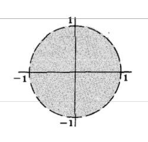
반면에, Example 1.5에서 정의된 \(\mathbf{R}^2\) 위의 metric \(d_1\)과 \(d_2\)에 대하여, \(S_{d_1}(p, \delta)\)와 \(S_{d_2}(p, \delta)\)는 아래에 그려진 \(\mathbf{R}^2\)의 부분집합들이다.
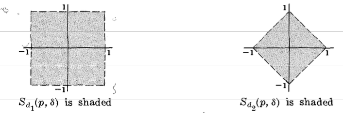
Example 3.2: 집합 \(X\) 위의 trivial metric을 \(d\)라 하고, \(p \in X\)라 하자. \(p\)와 \(X\)의 다른 모든 점 사이의 거리는 정확히 1임을 기억하자. 따라서 \[ S(p, \delta) = \begin{cases} X \quad \text{if } \delta > 1 \\ \{p\} \quad \text{if } \delta \le 1 \end{cases} \]
Example 3.3: 실수선 \(\mathbf{R}\) 위의 usual metric을 \(d\)라 하자, 즉 \(d(a,b) = |a - b|\)이다. 그러면 open sphere \(S(p, \delta)\)는 열린구간 \((p - \delta, p + \delta)\)이다.
Example 3.4: \([0,1]\) 위의 모든 연속함수들의 집합 \(C[0,1]\) 위의 metric \(d\)를 다음과 같이 정의하자 \[ d(f, g) = \sup \{|f(x) - g(x)| : x \in [0,1]\} \] (Example 1.4를 보라). \(\delta > 0\)과 함수 \(f_0 \in C[0,1]\)가 주어지면, open sphere \(S(f_0, \delta)\)는 아래 그림에 나타난 것처럼 \(f_0 - \delta\)와 \(f_0 + \delta\)로 둘러싸인 영역 안에 있는 모든 연속함수 \(g\)들의 집합이다.
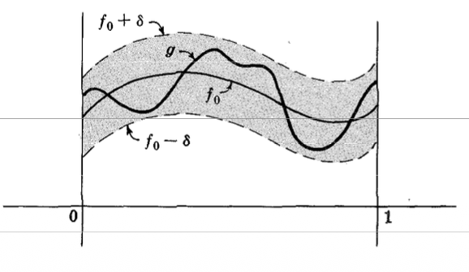
metric space에서 open spheres의 한 가지 중요한 성질은 다음 lemma에 주어진다.
Lemma 8.2: Let \(S\) be an open sphere with center \(p\) and radius \(\delta\). Then for every point \(q \in S\) there exists an open sphere \(T\) centered at \(q\) such that \(T\) is contained in \(S\). (See the adjacent Venn diagram.)
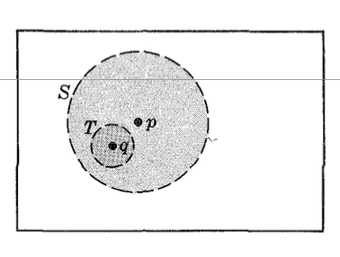
METRIC TOPOLOGIES, METRIC SPACES일반적으로 두 open spheres의 교집합은 open sphere일 필요는 없다. 그러나 우리는 두 open spheres의 교집합에 있는 모든 점이 그 교집합 안에 포함된 어떤 open sphere에 속한다는 것을 보일 것이다. 즉,
Lemma 8.3: Let \(S_1\) and \(S_2\) be open spheres and let \(p \in S_1 \cap S_2\). Then there exists an open sphere \(S_p\) with center \(p\) such that \(p \in S_p \subset S_1 \cap S_2\).
따라서 Theorem 6.1에 의해 우리는 다음을 얻는다.
규빈: Thm 6.1
Theorem 6.1: Let \(\mathcal{B}\) be a class of subsets of a non-empty set \(X\). Then \(\mathcal{B}\) is a base for some topology on \(X\) if and only if it possesses the following two properties: (i) \(X = \bigcup\{B : B \in \mathcal{B}\}\). (ii) For any \(B, B^* \in \mathcal{B}\), \(B \cap B^*\) is the union of members of \(\mathcal{B}\), or, equivalently, if \(p \in B \cap B^*\) then \(\exists B_p \in \mathcal{B}\) such that \(p \in B_p \subset B \cap B^*\).
Theorem 8.4: The class of open spheres in a set \(X\) with metric \(d\) is a base for a topology on \(X\). Definition: Let \(d\) be a metric on a non-empty set \(X\). The topology \(\mathcal{T}\) on \(X\) generated by the class of open spheres in \(X\) is called the metric topology (or, the topology induced by the metric \(d\)). Furthermore, the set \(X\) together with the topology \(\mathcal{T}\) induced by the metric \(d\) is called a metric space and is denoted by \((X, d)\).
따라서 metric space는 위상이 metric에 의해 유도되는 위상공간이다. 이에 따라, 위상공간에서 정의된 모든 개념들은 metric space에 대해서도 역시 정의된다. 예를 들어, metric space에 대하여 열린집합, 닫힌집합, 근방, 집적점, 폐포 등을 말할 수 있다.
Example 4.1: 실수선 \(\mathbf{R}\) 위의 usual metric을 \(d\)라 하자, 즉 \(d(a,b) = |a - b|\)이다. 그러면 \(\mathbf{R}\)에서의 open spheres는 정확히 유한한 열린구간들이다. 따라서 \(\mathbf{R}\) 위의 usual metric은 \(\mathbf{R}\) 위의 usual topology를 유도한다. 마찬가지로, 평면 \(\mathbf{R}^2\) 위의 usual metric은 \(\mathbf{R}^2\) 위의 usual topology를 유도한다.
Example 4.2: 어떤 집합 \(X\) 위의 trivial metric을 \(d\)라 하자. 임의의 \(p \in X\)에 대하여, \(S(p, \frac{1}{2}) = \{p\}\)임에 유의하자. 따라서 모든 singleton 집합은 열린집합이고, 결국 모든 집합이 열린집합이 된다. 다시 말해, \(X\) 위의 trivial metric은 \(X\) 위의 discrete topology를 유도한다.
Example 4.3: \((X, d)\)가 metric space이고 \(Y\)가 \(X\)의 공집합이 아닌 부분집합이라고 하자. 함수 \(d\)를 부분집합 \(Y\)의 점들에 제한한 것 역시 \(d\)로 나타내며, 이는 \(Y\) 위의 metric이 된다. 우리는 \((Y, d)\)를 \((X, d)\)의 metric subspace라고 부른다. 실제로 \((Y, d)\)는 \((X, d)\)의 subspace이며, 즉 relative topology를 갖는다.
흔히 동일한 기호, 예를 들어 \(X\)를, metric space와 그 metric이 정의된 underlying set을 모두 나타내는 데 사용한다.
연구: snow-distance가 유도하는 공간은 뭘까
규빈: 원래는 \((X,d)\)를 metric space라고 해야하는데 때로는 \(X\)를 metric space라고 하기도 한다는 의미.
PROPERTIES OF METRIC TOPOLOGIES
metric space \(X\)의 위상은 metric으로부터 유도되므로, \(X\)의 위상적 성질들이 \(X\)의 거리 성질들과 관련되어 있을 것이라고 생각하는 것은 타당하다. 예를 들어,
Theorem 8.5: Let \(p\) be a point in a metric space \(X\). Then the countable class of open spheres, \(\{S(p, 1), S(p, \frac{1}{2}), S(p, \frac{1}{3}), \ldots\}\) is a local base at \(p\).
Theorem 8.6: metric space \(X\)의 부분집합 \(A\)의 closure \(\overline{A}\)는 \(A\)로부터의 거리가 0인 점들의 집합이다, 즉 \[ \overline{A} = \{ x : d(x, A) = 0 \}. \] > 규빈: 이게 또 살짝 새로운 관점이네.. “집합\(A\)클로저 = 집합\(A\)와의 거리가 0인 점들의 집합”
공리 [M4]로부터, singleton 집합 \(\{p\}\)로부터의 거리가 0인 유일한 점은 \(p\) 자신뿐임을 알 수 있다, 즉 \[ d(x, \{p\}) = 0 \text{ implies } x = p \] 따라서 앞의 정리에 의해, metric space에서 singleton 집합 \(\{p\}\)는 닫힌집합이다. 이에 따라, singleton 집합들의 유한 합집합, 즉 유한집합도 닫힌집합이다. 이를 다음과 같이 정식으로 서술한다:
Corollary 8.7: In a metric space \(X\) all finite sets are closed.
따라서 metric space \(X\)는 일반적인 위상공간에서는 성립하지 않을 수도 있는 어떤 위상적 성질들을 갖는다는 것을 알 수 있다.
다음으로 metric space의 중요한 “separation” 성질이 이어진다.
Theorem 8.8 (Separation Axiom): Let \(A\) and \(B\) be closed disjoint subsets of a metric space \(X\). Then there exist disjoint open sets \(G\) and \(H\) such that \(A \subset G\) and \(B \subset H\). (See Venn diagram below.)
위의 정리로부터 서로소인 두 닫힌집합 사이의 거리가 0보다 클 것이라고 생각할 수도 있다. 다음 예제는 이것이 사실이 아님을 보여준다.